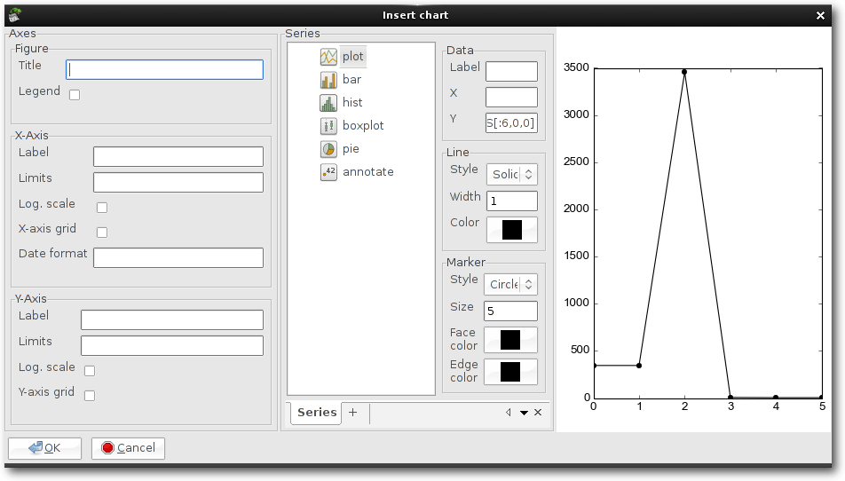
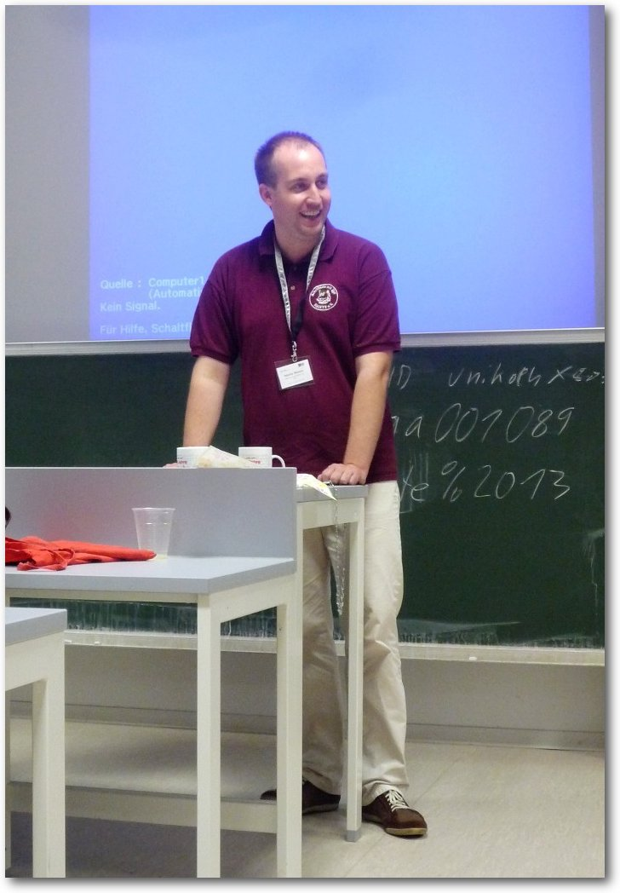

freiesMagazin Dezember 2013
(ISSN 1867-7991)
Topthemen dieser Ausgabe
Ubuntu und Kubuntu 13.10Ubuntu 13.10 „Saucy Salamander“ bereitet den Weg zur nächsten LTS-Version. Der Artikel soll ein wenig untersuchen, wie es mit der Qualität der Distribution bestellt ist, in dessen Entwicklungszyklus der Hauptaugenmerk von Canonical vor allem auf der Mobilversion „Ubuntu Touch“ lag. Ebenso soll ein Blick auf Kubuntu 13.10 geworfen werden. (weiterlesen)
GPU-Computing mit R
Der Artikel bietet eine Einführung in GPU-Computing mit dem Statistikprogramm R. Besitzer von Grafikkarten mit NVIDIA-Chipsatz haben unter Nutzung des „NVIDIA CUDA-Toolkits“ und des R-Pakets „gputools“ die Möglichkeit, parallelisierbare Rechenaufgaben auf ihrer GPU auszuführen. Entsprechende Installationsanleitungen versetzen den Leser in die Lage, eine R-CUDA-Schnittstelle zu implementieren und für einfache mathematisch-statistische Rechenoperationen zu nutzen. (weiterlesen)
Diagramme in Linux – Vier Tabellenkalkulationen im Vergleich
Tabellenkalkulationen sind aus der Arbeitswelt kaum noch wegzudenken. Eine ihrer Stärken ist die schnelle Visualisierung tabellarischer Daten in Diagrammen. Unter Linux gibt es eine Reihe freier („Free and Open Source Software“) Tabellenkalkulationen, die unterschiedliche Ansätze zur Diagrammerstellung verfolgen. (weiterlesen)
Zum Index
Inhalt
Linux allgemeinUbuntu und Kubuntu 13.10
Der November im Kernelrückblick
Anleitungen
GPU-Computing mit R
Äquivalente Windows-Programme unter Linux – Teil 2
Mit OpenVPN Firmen-Firewalls überwinden
Software
Diagramme in Linux – Vier Tabellenkalkulationen im Vergleich
Community
Rückblick: DANTE-Herbsttagung in Köln
Rezension: Technisches Schreiben
Rezension: Linux Hochverfügbarkeit
Magazin
Editorial
Veranstaltungen
Vorschau
Konventionen
Impressum
Zum Index
Editorial
Kein Editorial
Das Editorial zum Jahresabschluss wird dieses Mal von dem Wörtchen „kein“ überschattet. Immerhin gibt es wieder ein Editorial! Nur einem Leser ist aufgefallen, dass wir in der Novemberausgabe von freiesMagazin kein Editorial hatten. Der Grund dafür war einfach Zeitmangel! Natürlich hat der Tag bei uns wie bei jeder anderen Person auch volle 24 Stunden, aber oft stehen viele andere Dinge gleichzeitig an, sodass nicht immer für alles Zeit bleibt. So fanden im Oktober einige Messen und Veranstaltungen statt und durch den Weggang eines Redaktionsmitgliedes hatten die zwei verbliebenen Redakteure nicht mehr die Zeit gefunden, ein Editorial zu schreiben.Kein Programmierwettbewerb
Aus dem gleichen Grund gibt es auch im Dezember keinen neuen Programmierwettbewerb. Wir hatten im September noch die Hoffnung gehabt, wenigstens einen Wettbewerb auf die Beine zu stellen [1]. Da Dominik Wagenführ, Ausrichter des jährlichen Wettbewerbs, aber privat und beruflich eingespannt ist, wird es leider keinen geben. Der Wettbewerb wird damit verschoben und findet vielleicht im Januar 2014 statt. Das Interesse bei den Lesern war da, wie wir bei der Umfrage gesehen haben.Keine Leserbriefe
Was dagegen niemanden aufgefallen war, waren die fehlenden Leserbriefe in der Novemberausgabe von freiesMagazin. Und auch diesen Monat haben wir nur zwei Zusendungen erhalten (siehe weiter unten), die aber nicht eine ganze Seite einnehmen können, weswegen es auch diesen Monat keine Leserbriefe gibt. Passenderweise trifft ein Leserbrief von Adolf Winterer aber genau das Thema des Editorials dieser Ausgabe. Er fragte uns, ob wir nicht Flattr einsetzen wollen, um einem Lob in einem Leserbrief noch mehr Nachdruck verleihen zu können. Das Thema Flattr hatten wir vor drei Jahren schon einmal im Editorial von freiesMagazin 06/2013 [2] ausführlich behandelt. Neben zahlreiche steuerrechtlichen, lizenzrechtlichen und verwendungstechnischen Problemen, die Flattr mitbringt, haben wir uns bei freiesMagazin entschieden, kein Geld für unsere Arbeit anzunehmen. Alle Autoren und alle Helfer sollen freiwillig ihre Zeit opfern. Selbst wenn 1000 Euro eingehen, wäre die Frage einer gerechten Verteilung auf die Autoren, Layouter, Lektoren und Redakteure nahezu unmöglich zu beantworten. Zusätzlich können wir mit (mehr) Geld nichts anfangen, denn dies führt nicht dazu, dass neue Artikel geschrieben werden (dazu unten mehr) oder sich das Magazin von alleine setzt. Auch wenn es für viele einfacher ist, mit einem Klick einen Euro zu spenden, benötigen wir viel mehr helfende Hände. Daher sind Leserbriefe, die sich mit den Artikeln und Beiträgen in freiesMagazin auseinandersetzen, auch viel wertvoller als Geld. Denn wenn sich ein Leser die Zeit nimmt, ein paar Zeilen zu schreiben und abzusenden, sehen der Autor und die Redaktion, dass die geschriebenen Texte nicht umsonst waren oder in den Weiten des Netzes untergegangen sind. Wenn Sie also Ihre Wertschätzung für das Magazin und die Artikel darin zum Ausdruck bringen wollen, schreiben Sie uns per E-MailKeine Artikel
Und was bei den Leserbriefen anfängt, setzt sich bei den Artikeln fort. Anstatt nur einfach zu „jammern“, dass wir zu wenig Artikel haben, soll ein kleiner Einblick in unsere Redaktionsarbeit und den Kontakt mit den Autoren gegeben werden. Im letzten Jahr (seit 1. November 2013) haben uns 32 neue Autoren angeschrieben und angeboten, einen Artikel für freiesMagazin zu schreiben. Das war entweder das Angebot irgendetwas zu schreiben oder es wurden schon fertige Entwürfe eingereicht. Wenn man rechnet, dass wir pro Monat circa acht Artikel im Magazin veröffentlichen (also 96 im Jahr), ist allein das nur ca. ein Drittel des Bedarfs für das Magazin. Von diesen 32 Angeboten sind nur elf Artikel tatsächlich fertig geworden, sieben Angebote sind derzeit noch offen. Einige Autoren haben sich nach dem ersten Kontakt nie wieder gemeldet. Selbst auf mehrfache Anfrage haben sich zehn Autoren nicht mehr gemeldet. Immerhin vier Absagen gab es auf eine Nachfrage hin. Eigenständige Absagen (wegen anderer Verpflichtungen, Interessenwechsel etc.) gab es keine. Das heißt also, von nahezu der Hälfte der Autoren hören wir nie wieder etwas bzw. das Angebot wird zurückgenommen. Der jährliche Bedarf von freiesMagazin wird damit also nur noch zu einem Sechstel durch neue Autoren abgedeckt. Dieser Wert ist erschreckend gering. Da sich viele Autoren leider gar nicht mehr zurückmelden, können wir auch nicht genau sagen, wo die Gründe hierfür liegen. Bei den Autoren, die sich melden und absagen, hat es meistens mit veränderten Lebenssituationen zu tun, sodass eine Absage absolut verständlich ist. Natürlich könnten wir jetzt verzweifeln und freiesMagazin aufgeben, wäre da nicht dieses eine Sechstel von neuen Autoren, die Artikel abliefern. Manchmal führt das dazu, dass daraus auch ein zweiter oder dritter Artikel entsteht. Und dann haben wir in der Redaktion eine relative Sicherheit, dass der Autor wieder etwas Gutes abliefert. Dieses lange Editorial ist daher allen freiwilligen Autoren gewidmet, die sehr viel Zeit in das Schreiben der Artikel für freiesMagazin investieren. Vor allem wollen wir aber auch allen danken, die Wiederholungstäter sind und, wenn auch nicht regelmäßig jeden Monat, aber zumindest ab und an etwas zum Magazin beitragen. Wer sich von Ihnen auch in diesen Kreis einreihen möchte, kann uns ja unter[1] http://www.freiesmagazin.de/20130909-ergebnisse-der-abstimmung-fuer-programmierwettbewerb
[2] http://www.freiesmagazin.de/freiesMagazin-2010-06
Das Editorial kommentieren
Zum Index
Ubuntu und Kubuntu 13.10
von Hans-Joachim Baader Ubuntu 13.10 „Saucy Salamander“ bereitet den Weg zur nächsten LTS-Version. Der Artikel soll ein wenig untersuchen, wie es mit der Qualität der Distribution bestellt ist. Ebenso soll ein Blick auf Kubuntu 13.10 geworfen werden. Redaktioneller Hinweis: Der Artikel „Ubuntu und Kubuntu 13.10“ erschien erstmals bei Pro-Linux [1].Vorwort
Planmäßig erschien Ubuntu 13.10 „Saucy Salamander“ ein halbes Jahr nach Version 13.04. Schon die Ankündigung seitens Canonical machte klar, dass die meiste Arbeit im letzten halben Jahr wohl in die Mobilversion „Ubuntu Touch“ mit dem neuen Display-Server Mir geflossen ist. Diese Variante soll aber nicht Gegenstand des Artikels sein, der sich auf Ubuntu und Kubuntu beschränkt. Somit ist zu erwarten, dass die neue Version, die nur neun Monate lang mit Updates versorgt wird, „bemerkenswert unbemerkenswert“ ausfällt. Zahlreiche Software-Updates gab es natürlich, aber kaum eines davon stellt einen großen Bruch mit der Vorversion dar. Wie immer sei angemerkt, dass es sich hier nicht um einen Test der Hardwarekompatibilität handelt. Es ist bekannt, dass Linux mehr Hardware unterstützt als jedes andere Betriebssystem, und das überwiegend bereits im Standard-Lieferumfang. Ein Test spezifischer Hardware wäre zu viel Aufwand für wenig Nutzen. Falls man auf Probleme mit der Hardware stößt, stehen die Webseiten von Ubuntu zur Lösung bereit. Da eine Erprobung auf realer Hardware nicht das Ziel des Artikels ist, werden für den Artikel zwei identische virtuelle Maschinen, 64 Bit, unter KVM mit jeweils 1024 MB RAM verwendet. In der ersten wurde Ubuntu installiert, in der anderen Kubuntu.Installation
Ubuntu wird meist von einem Live-System aus installiert, das als ISO-Image zum Download bereitsteht. In der aktuellen Version ist es auf eine Größe von 0,9 bis 1,0 GB je nach Variante angewachsen. Dieses Desktop-Image kann auf DVD oder einem USB-Medium verwendet werden. Das Installationsprogramm Ubiquity bietet ähnlich wie der Debian-Installer oder Anaconda von Fedora jetzt alle Möglichkeiten an, die Festplatten zu partitionieren und das System darauf zu installieren. Die gesamte Festplatte oder einzelne Partitionen können verschlüsselt werden und LVM wird unterstützt, auch in Form einer automatischen Partitionierung. Der Speicherbedarf wird dieses Mal in der vernachlässigt wirkenden Dokumentation bei der Desktop-Version auf 512 MB beziffert, beim Server auf 256 MB. Unter Umständen soll eine Installation mit 64 MB RAM bereits gelingen. Zu empfehlen sind jedoch auf dem Desktop mindestens ein GB, so dass alle benötigten Anwendungen zugleich ohne zu swappen laufen können, denn nur so läuft das System vollständig flüssig.Beginn der Installation.
Hier soll nur die Installation von der Desktop-DVD kurz vorgestellt werden. Die Installation unterlag nur wenigen sichtbaren Änderungen gegenüber der letzten Version. Standardmäßig wird nur eine einzige große Partition mit dem Dateisystem ext4 sowie eine Swap-Partition angelegt. Wenn man LVM einsetzt, kommt noch eine 230 MB große ext2-Partition für /boot hinzu. Will man seine Partitionierung selbst definieren, muss man „Etwas anderes“ auswählen, wodurch das Partitionierungswerkzeug gestartet wird. Dort können die gängigen Dateisysteme einschließlich Btrfs ausgewählt werden.
Auswahl der Installationsart.
Direkt nach der Definition der Partitionen beginnt der Installer mit der Partitionierung und der Installation der Pakete im Hintergrund. Ein Fortschrittsbalken zeigt von hier an den Stand der Installation an. Parallel dazu kann man die Zeitzone auswählen und danach das gewünschte Tastatur-Layout einstellen.
Laufende Installation.
Im letzten Schritt gibt man seinen Namen, Anmeldenamen, Passwort und den Computernamen ein. Wenn zuvor bereits per DHCP ein Name ermittelt werden konnte, wird dieser als Vorgabe angezeigt. Wenn erkannt wird, dass die Installation in einer virtuellen Maschine läuft, wird dagegen der Name benutzer-virtual-machine vorgegeben. Optional können Daten im Home-Verzeichnis verschlüsselt werden. Während man das Ende der Installation abwartet, kann man nun noch einige Tipps zu Ubuntu ansehen.
Ausstattung
Sowohl Ubuntu als auch Kubuntu starten ähnlich schnell wie in den Vorversionen. Ubuntu setzt eigentlich eine Hardware-3-D-Beschleunigung voraus, Kubuntu dagegen nicht. Bei Grafikkarten, die keine Hardware-3-D-Beschleunigung bieten, wird auf llvmpipe zurückgegriffen, das die 3-D-Funktionen in Software emuliert. Bei einer ausreichend schnellen CPU ist das Verfahren von der Geschwindigkeit etwas besser als in den ersten Versionen, aber immer noch gerade so erträglich. Überraschenderweise ist es inzwischen aber schnell genug, um sogar kleine Videos abzuspielen. Das Grafiksystem ist bei X.org 7.7 geblieben, da es in der Zwischenzeit keine neue Version gab. Allerdings wurden einige Komponenten von X.org aktualisiert, darunter der X-Server 1.14.3 und Mesa 9.2. Unity liegt in Version 7.1 vor. Unter den größten Änderungen seit Ubuntu 13.04 findet sich der Linux-Kernel, der auf Version 3.11.3 aktualisiert wurde. Aus Benutzersicht bedeutet das eine Vielzahl zusätzlicher Treiber und viele Optimierungen. Daneben enthält der Kernel viele neue Features, die nur für Spezialisten von Interesse sind.Log-in-Bildschirm von Ubuntu.
Das Init-System Upstart ermöglicht in Version 1.10 Jobs, die auf Änderungen im Dateisystem reagieren, und das neue zugehörige Werkzeug upstart-monitor ermöglicht das Beobachten von Ereignissen in Echtzeit. In den Desktop-Varianten [2] erhielt Upstart zudem Benutzersitzungen. Das Drucksystem CUPS konnte von allen Ubuntu-spezifischen Anpassungen befreit werden. In CUPS 1.6.2 wurde durch die OpenPrinting-Arbeitsgruppe der Linux Foundation eine mit früheren Versionen kompatible Erkennung von Netzwerkdruckern implementiert [3]. CUPS wurde außerdem in mehr Pakete aufgeteilt, so dass es unterschiedlichen Anforderungen besser gerecht wird. Für Entwickler stehen GCC 4.8.1, Python 2.7.5 und 3.3.2, OpenJDK 6b27 und 7u25 und vieles mehr bereit. Python 3.3 ist die installierte Version von Python, doch da sowohl innerhalb des Ubuntu-Archivs als auch außerhalb noch viele Pakete auf Python 2 beruhen, ist auch diese Version installierbar. AppArmor [4] kann jetzt auch den Zugriff auf D-Bus und Unix-Sockets kontrollieren, und eigene Richtlinien sollen sich leichter erstellen lassen. Kubuntu [5] enthält in Version 13.10 KDE SC 4.11, das unter anderem eine schnellere Indexierung bei Nepomuk und Verbesserungen in der PIM-Suite Kontact bringt und den Grundstein für einen späteren Umstieg auf Wayland und Qt 5 legt. Die Dokumentation von Kubuntu ist zurück. Dazu kommen „Muon Discover“, eine nach Entwicklerangaben „benutzerfreundliche Art, Anwendungen zu entdecken und zu installieren“, ein neuer Benutzer-Manager, KDE Telepathy 0.6.2 mit verbessertem Editieren von Text und verbesserten Benachrichtigungen und ein neues Network Manager-Applet. Bei der Installation kann nun auch WLAN eingerichtet werden.
Log-in-Bildschirm von Kubuntu.
Wie gewohnt hat Root keinen direkten Zugang zum System, sondern die Benutzer der Gruppe sudo können über das Kommando sudo Befehle als Root ausführen. Der Speicherverbrauch von Unity ist augenscheinlich noch weiter gewachsen. Nicht weniger als 660 MB benötigt die Umgebung allein, ohne dass irgendwelche produktive Software gestartet wurde. Davon benötigt Compiz bereits 365 MB. KDE benötigt in der Standardinstallation mit einem geöffneten Terminal-Fenster etwa 430 MB. Die Messung des Speicherverbrauchs der Desktops kann jeweils nur ungefähre Werte ermitteln, die zudem in Abhängigkeit von der Hardware und anderen Faktoren schwanken. Aber als Anhaltspunkt sollten sie allemal genügen.
Unity
Die Neuerungen in Unity, der offiziellen Desktopumgebung von Ubuntu, halten sich in Grenzen. Unity erhielt neue „intelligente Sichten“. Diese ermöglichen es, nach eingegebenen Suchbegriffen in mehr als 50 Online-Quellen zu suchen und die Ergebnisse übersichtlich darzustellen. Dabei sollen die erkannten Benutzervorlieben berücksichtigt werden. Die Suchfunktion, die standardmäßig auch Online-Shops und andere Online-Quellen umfasst, lässt nach wie vor die Frage nach dem Datenschutz aufkommen. Einige der Suchanfragen gehen über einen Proxy-Server von Ubuntu und werden durch HTTPS verschlüsselt. Andere gehen der Datenschutzerklärung [6] zufolge direkt an „ausgewählte Drittanbieter“. Die preisgegebenen Daten sollten sich auf die Suchbegriffe und die IP-Adresse beschränken. Dass Ubuntu und andere Anbieter daraus Statistiken generieren, darf angenommen werden. Das ist jedoch üblich und sollte den Unternehmen auch nicht angekreidet werden, solange sie damit nur versuchen, ihr Angebot zu optimieren.Übersichtsseite von Unity mit Ergebnissen der Suche im Netz.
Ohnehin dürften die Anbieter kaum eine Möglichkeit haben, mit diesen Daten mehr anzufangen. Denn anders als bei Webbrowsern, die fast individuellen Benutzern zugeordnet werden können, sollte die Suchfunktion von Ubuntu eine solche Identifikation nicht möglich machen. Man sollte sich also nicht zu sehr darüber aufregen, dass die Funktion standardmäßig eingeschaltet ist. Das heißt natürlich nicht, dass die Netz-Suchfunktion tolerierbar ist; in den meisten Fällen ist sie einfach nur lästig und nutzlos und sollte abgeschaltet werden. Das Deaktivieren der Funktion ist weiterhin über einen Schalter in den Systemeinstellungen unter der Kategorie „Privatsphäre“ möglich. Einzelne Linsen lassen sich wohl nur durch die Deinstallation deaktivieren. Eine separate Shopping- oder Amazon-Linse gibt es jedoch nicht; eine feinere Auswahl als ein globales Ein oder Aus scheint nicht mehr möglich zu sein. Unity ist eigentlich nicht schlecht, aber es hat grundsätzliche Probleme. Eines davon ist Compiz, das auf dem Testsystem 365 MB RAM „frisst“, was das System natürlich nicht schneller macht. Andere Eigenschaften von Unity sind für manche Benutzer eine Freude, für andere eine Last. Unity ist, wie GNOME 3, offenbar nur noch auf Mobilgeräte mit Touchscreen ausgerichtet, und diesem Ziel wird jeglicher Benutzer-Komfort geopfert. Ohne massive Änderung der Konfiguration halte ich Unity auf dem Desktop für unbenutzbar. Die „verpeilten“ Scrollbalken, das umständliche globale Menü und die Anordnung der Fenster-Buttons auf der falschen Seite sind für mich weiterhin unakzeptabel. Die Fehlerhaftigkeit des Menükonzepts zeigt sich z. B. an Rhythmbox, für das nun außer Rechtsklick auf die Startleiste (und kill auf der Kommandozeile) keine Möglichkeit mehr zum Beenden existiert. Doch wie gesagt, manche nutzen diese Funktionen gern, und wer will, kann es anders einstellen. Der Standard-Webbrowser in Ubuntu ist Firefox 24.0. LibreOffice ist in Version 4.1.2.3 vorinstalliert. Für E-Mails ist Thunderbird zuständig. Die sonstigen installierten Programme sind im Wesentlichen die Standard-Programme von GNOME, die zumindest grundlegend die häufigsten Aufgaben abdecken. In den meisten Fällen bieten sie gerade einmal Grundfunktionen, so dass man sich gerne nach leistungsfähigeren Programmen im Software-Center umsieht.
Firefox in Unity.
Für Software-Updates ist weiterhin die Software-Aktualisierung zuständig. Hat man das Software-Center geöffnet und startet die Aktualisierung, wird der Fortschritt auch in der Icon-Leiste des Software-Centers angezeigt. Die Software-Aktualisierung selbst sortiert die Pakete jetzt nach Komponenten, von denen eine „Ubuntu-Kern“ heißt. Da diese anfänglich zugeklappt dargestellt wird, könnte man es für ein reines Kernel-Update halten, doch tatsächlich können darin mehrere einzelne Updates vorliegen.
Software-Aktualisierungen.
Für die Installation und Deinstallation von Paketen ist weiterhin das Software-Center zuständig, das in Version 13.10 vorliegt. Neue Funktionen sind gegenüber früheren Versionen nicht auszumachen. Das Angebot an proprietärer Software, die man über das Software-Center kaufen kann, ist schon recht stattlich. Den größten Anteil daran haben wohl Spiele, aber auch Hilfsprogramme und Produktivitätswerkzeuge werden angeboten.
Das Ubuntu-Software-Center.
Richtig konfigurierbar ist Unity auch weiterhin nicht. Es gibt in dieser Version keinerlei Einstellungen in den Systemeinstellungen. Einiges kann man über Compiz konfigurieren. Dazu muss man compizconfig-settings-manager (ccsm) nachinstallieren. Für noch mehr Konfigurierbarkeit sollte man auch dconf-tools installieren. Allerdings ist besonders letzteres Programm eher für Experten. Leicht zu benutzen ist dagegen unity-tweak-tool, bei dem etwas unklar ist, ob es etwas enthält, was nicht in den Systemeinstellungen oder in CompizConfig zu finden ist. „Ubuntu Tweak“ ist dagegen nicht mehr im Paketarchiv enthalten, möglicherweise ist es veraltet.
KDE
In Kubuntu [7] wurde KDE SC auf die Version 4.11.2 aktualisiert. Der Standard-Webbrowser in Kubuntu ist Rekonq, jetzt in Version 2.3.2. Als Musik-Player ist Amarok 2.8 vorinstalliert, das jetzt einige Oberflächenelemente der Version 1.x zurückbringt, die seit Version 2.0 fehlten, und viele weitere kleine Funktionen hinzufügt. OwnCloud wurde in Version 5 aufgenommen, die die Benutzbarkeit, Geschwindigkeit und Sicherheit verbessern soll. OwnCloud ist allerdings nicht standardmäßig installiert, sondern nur in den Repositorys vorhanden. KDE PIM mit Kontact ist ebenfalls in Version 4.11.2 installiert. Außerdem sind LibreOffice, Krita und Firefox vorhanden. Weitere Anwendungen muss man aus den Repositorys nachinstallieren, wenn man sie braucht.Rekonq.
Die Neuerungen und Verbesserungen in KDE SC 4.11 gegenüber der Vorgängerversion sind überwiegend klein, aber zahlreich und können daher nicht alle genannt werden. Nur ein Teil davon ist überhaupt sichtbar. So wurde in der PIM-Suite Kontact unter anderem die Indexierung bei Nepomuk beschleunigt. Die Monitor-Konfiguration in den Systemeinstellungen wurde durch das neue KScreen ersetzt. Die Web Shortcuts wurden weiter verbessert und der Window-Manager KWin nutzt jetzt das XCB-Protokoll mit X11. Die Paketverwaltung Muon wurde auf Version 2.0.65 angehoben. Muon besteht aus drei separaten Programmen, denn neben der Muon-Paketverwaltung und der zugehörigen Muon-Aktualisierungsverwaltung existiert noch Muon Discover, ein Ersatz für die frühere Muon-Programmverwaltung. Das neue Muon Discover erinnert ein wenig an das Software-Center, leistet jedoch noch längst nicht so viel. Es dient zum Finden von Anwendungen, kann aber auch Updates durchführen. Witzig ist die Kategorie Comics, die offenbar zahlreiche Plug-ins für das Applet plasma-comics enthält.
Muon Discover.
Mit Muon traten erhebliche Ungereimtheiten auf, die auch in diversen Foren schon berichtet wurden. Sie betreffen die Zahl der zu aktualisierenden Pakete. Während apt-get beispielsweise zwölf zu aktualisierende Pakete meldet, besagt die KDE-Benachrichtigung, dass es fünf seien, und ein Aufruf der Muon-Aktualisierungsverwaltung ergibt schlicht, dass alle Pakete auf dem neuesten Stand wären. Die Aktualisierung über Muon Discover funktionierte hingegen genauso, wie es mit apt-get funktioniert hätte. Letztlich macht die Software auch nichts anderes, als apt-get aufzurufen und dessen Ausgaben im Fenster anzuzeigen. Wer KDE Plasma Active testen will, findet Version 0.5 in den Archiven. Das Paket kubuntu-low-fat-settings existiert dagegen nicht mehr, wahrscheinlich wurde das System inzwischen so weit verkleinert, dass das Paket unnötig wurde.
Multimedia im Browser und auf dem Desktop
Nichts wesentlich Neues gibt es im Multimedia-Bereich. Firefox ist jetzt in Version 24 enthalten. Mehrere Plug-ins zum Abspielen von Videos in freien Formaten sind wie immer vorinstalliert. Die vorinstallierte Erweiterung „Ubuntu Firefox Modifications“ hat Version 2.8 erreicht. Weitere vorinstallierte Erweiterungen sorgen für die Integration mit Unity und den Ubuntu-Online-Accounts. Zum Testen von Web-Videos wurden tagesschau.de, heute.de und Youtube ausgewählt. Ohne weiteres Zutun funktionieren Videos bei tagesschau.de und erstmals auch bei heute.de. Flash ist ein anderes Thema. Standardmäßig ist kein Flash-Player vorinstalliert, sodass sich kein Flash-Video abspielen lässt. Auf Youtube funktioniert dagegen der HTML5-Modus ganz ohne Flash. Die Tests wurden wegen der Langsamkeit von Unity auf ein Minimum beschränkt; flüssige Video-Wiedergabe ist mit llvmpipe nicht möglich, auch wenn sie besser geworden ist. Unter KDE ist der vorinstallierte Webbrowser Rekonq 2.3.2 in den Grundfunktionen Firefox ebenbürtig. Videos bei tagesschau.de und heute.de waren problemlos abspielbar. Youtube funktioniert im HTML5-Modus wie Firefox.Video in Rekonq in Kubuntu.
Auf dem Unity-Desktop sollte in den bekannten Anwendungen Rhythmbox und Totem, das jetzt allerdings „Filmwiedergabe“ heißt, bei standardmäßig nicht unterstützten Formaten eine Dialogbox erscheinen, die eine Suche nach passenden GStreamer-Plug-ins ermöglicht und sie installiert. Wenn Ubuntu mehr als ein Paket findet, das geeignet ist, kann man auswählen, welches installiert werden soll. Beim MP3-Format sind das beispielsweise ein Fluendo-Plug-in und eine GStreamer-Plug-in-Sammlung. Es ist zu empfehlen, das Fluendo-Plug-in zu ignorieren, so dass das FFmpeg-Plug-in installiert wird. Wie schon früher funktioniert die Erkennung der benötigten Formate meistens leider nicht. Es kann also unter Umständen nötig sein, weitere GStreamer-Pakete von Hand zu installieren, beispielsweise für das MPEG2-Format. Es kann außerdem passieren, dass beim ersten Installationslauf nicht alle benötigten Plug-ins installiert wurden – wahrscheinlich ist dieser Mechanismus nur für das Nachladen einzelner Plug-ins gedacht. Daher sollte man, wenn man es weiß, im Software-Center gleich alle GStreamer-Plug-ins installieren, und vielleicht noch andere Player wie VLC dazu. Schaden kann es nicht. Normalerweise muss Totem noch einmal neu gestartet werden, um die neuen Plug-ins zu erkennen. Unter KDE sieht es im Prinzip genauso aus, nur dass die Geschwindigkeit auch ohne 3-D-Hardware akzeptabel ist. Amarok ist der Standard-Audioplayer. Amarok oder Dragonplayer erkennen fehlende Plug-ins und starten die Paketverwaltung, ähnlich wie bei GNOME. Sinnvoller ist es aber auch hier, die GStreamer-Plug-ins schon vorab zu installieren. Zu beachten ist dabei allerdings, dass KDE noch GStreamer 0.10 verwendet.
Fazit
Wie immer, wenn es keine revolutionären Neuerungen gibt, fühlt man sich versucht, zu schreiben, dass es an Neuerungen fehlt. Tatsächlich gibt es allerdings Neuerungen, die einfach nur zu zahlreich sind, sie alle zu erwähnen. Schon die aktualisierten Programme bringen zahllose Erweiterungen und Korrekturen. Dabei sind das durchweg Verbesserungen; Verschlechterungen lassen sich in Ubuntu 13.10 nicht ausmachen. Somit ist Ubuntu 13.10 wie gewohnt von hoher Qualität, allerdings muss die vernachlässigte Dokumentation kritisiert werden, die sich in größeren Lücken sowohl in den Anmerkungen zur Veröffentlichung als auch in den Artikeln auf der Webseite äußert. Man sollte Ubuntu-Versionen, die keine LTS-Versionen sind, trotzdem weiterhin mehr oder weniger als Betaversionen betrachten. Wie immer liegen inzwischen in den einschlägigen Foren auch Berichte über Probleme mit dem Update vor. Ihre Zahl hält sich allerdings in Grenzen und es muss offen bleiben, wie viele davon durch Faktoren verursacht wurden, auf die Ubuntu keinen direkten Einfluss hat. Stellt man tatsächlich einmal Mängel fest, kann man oft damit leben oder es existiert ein Workaround. Zudem werden im Laufe der Zeit durch Updates viele Probleme behoben. Man kann das unterstützen, indem man Fehler meldet. In diesem Fall sollte man dann natürlich auch am Ball bleiben, auf Rückfragen reagieren und regelmäßig im Bugtracker [8] nachsehen. Benutzern, die auf größtmögliche Stabilität Wert legen, sei empfohlen, bei einer der LTS-Versionen von Ubuntu zu bleiben. Alle anderen, von Einsteigern bis zu erfahrenen Anwendern und Entwicklern, können auch mit Ubuntu 13.10 gut auskommen. Wer sicher gehen will, nicht zu viele Probleme zu erleben, sollte (wie fast immer) die Updates der ersten Wochen abwarten. Die Wahl des Desktop-Systems bleibt weiterhin eine Geschmacksfrage. Aber ob Unity, KDE, GNOME, Cinnamon, Enlightenment E17, Xfce, LXDE oder eine andere Oberfläche, letztlich kann jeder Benutzer selbst wählen und den Desktop weitgehend seinen Ansprüchen anpassen. Unter Linux herrscht, anders als anderswo, eben keine Einfalt auf dem Desktop. Links[1] http://www.pro-linux.de/artikel/2/1655/ubuntu-und-kubuntu-1310.html
[2] https://wiki.ubuntu.com/SaucySalamander/ReleaseNotes
[3] https://wiki.ubuntu.com/OpenPrinting
[4] https://wiki.ubuntu.com/AppArmor
[5] http://www.kubuntu.org/news/kubuntu-13.10
[6] http://www.ubuntu.com/privacy-policy
[7] http://www.kubuntu.org/
[8] https://bugs.launchpad.net/
| Autoreninformation |
| Hans-Joachim Baader (Webseite) befasst sich seit 1993 mit Linux. 1994 schloss er erfolgreich sein Informatikstudium ab, machte die Softwareentwicklung zum Beruf und ist einer der Betreiber von Pro-Linux.de. |
Diesen Artikel kommentieren
Zum Index
Der November im Kernelrückblick
von Mathias Menzer Basis aller Distributionen ist der Linux-Kernel, der fortwährend weiterentwickelt wird. Welche Geräte in einem halben Jahr unterstützt werden und welche Funktionen neu hinzukommen, erfährt man, wenn man den aktuellen Entwickler-Kernel im Auge behält.Linux 3.12
Auf eine achte Entwicklerversion hatte Torvalds verzichtet, am ersten November-Wochenende wurde die Kernel-Version 3.12 veröffentlicht [1]. Sie hatte 62 Tage zum Reifen und stellt damit eine der schnellsten Entwicklungen dar, insbesondere wenn man berücksichtigt, dass das diesjährige Kernel Summit [2] in den Entwicklungszeitraum fiel. Trotzdem rangiert sie mit fast 12000 Änderungen immerhin im Mittelfeld und braucht sich auch nicht hinsichtlich der Neuerungen zu verstecken.Grafik
Der neue Linux-Kernel ermittelt die richtige Taktfrequenz für die jeweilige Situation nun mittels einer neuen Methode. Diese verhindert unter anderem, dass die Ergebnisse innerhalb kleiner Zeiträume stark variieren und verschaffte damit den Radeon-Grafikchips von AMD/ATI einen Leistungszuwachs. Wie das Portal Phoronix.com feststellen konnte [3], ist dies darauf zurückzuführen, dass stark schwankende Taktraten die Leistung der Grafikkomponenten erheblich beeinträchtigten. Weitere Änderungen an der Infrastruktur für die Radeon- Chipsätze sind Erweiterungen des mit Linux 3.11 eingeführten Dynamischen Energiemanagements (DPM). Es unterstützt nun weitere Chipsätze, ist jedoch nach wie vor in der Standardkonfiguration nicht aktiviert. Systeme, die mehrere Grafikprozessoren (GPU) besitzen, profitieren von Änderungen an den Grafik-Treibern, die nun das Umschalten zwischen den verschiedenen GPUs ohne zusätzliche Treiber, Skripte oder sonstigen Hacks erlauben. Die macht zum Beispiel bei Notebooks Sinn, die neben einer sparsamen Grafikeinheit eine sehr leistungsstarke und -hungrige GPU aufweisen. Je nach Anwendungsfall kann nun mit Bordmittel zwischen den beiden gewechselt werden. Eine weitere Änderung im Grafikbereich trennt nun das Rendern der Bildschirmanzeige vom Umschalten der Grafik- und Displaymodi. Damit wird der Entwicklung Rechnung getragen, dass speziell im ARM-Bereich die beiden Aufgaben von unterschiedlichen Geräten wahrgenommen werden. Somit kann künftig ein Device Controller auch mit mehreren Grafikprozessoren zusammenarbeiten.Speicherverwaltung und Scheduling
Tickless Multitasking wurde weiterentwickelt. Seit Linux 3.10 können dadurch alle Prozessoren eines Systems ohne die Timeticks, zeitgesteuerte Interrupts, arbeiten bis auf einen. Dieser stellt quasi den Zeitgeber für die anderen Prozessoren dar und sendet mindestens einmal pro Sekunde ein Signal. Mit dem aktuellen Linux-Kernel ist die Aufgabe nun überflüssig und auch die letzte CPU kann in Zeiten, in denen das System nicht zu tun hat, schlafen gehen, ohne ständig auf die Uhr schauen zu müssen. Locking ist ein Schlagwort, mit dem das Sperren von Ressourcen zum Schutz vor konkurrierenden Zugriffen beschrieben wird. Im Zusammenhang mit virtualisierten Systemen und ihren Host-Systemen mutiert Locking bisweilen zum Performance-Alptraum, da sowohl Gastgeber als auch die Gast-Systeme Locks – also Sperren – einsetzen. Zumindest paravirtualisierte Systeme [4] wie KVM oder Xen können nun eine angepasste Locking-Methode nutzen, die in diesem Umfeld bessere Leistungen erzielt und weniger Prozessorzeit der Host-CPU vergeudet. Wenn der Speicher knapp wird, also Arbeitsspeicher und Auslagerungsspeicher voll sind, zieht Linux die Notbremse und beendet einen Prozess, um wieder Speicher frei zu bekommen. Wartet ein aktiver Prozess darauf, neuen Speicher zugewiesen zu bekommen, kann er Sperren auf Ressourcen gelegt haben, die der zum Abschuss ausgewählte Prozess benötigen würde, um sich sauber zu beenden und wieder Speicher frei zu machen. Verbesserungen am „Out-of-Memory-Killer“ sollen solchen Situationen vorbeugen. Systemaufrufe, denen nicht genug Speicher zur Verfügung gestellt werden kann, erhalten künftig einen Fehler zurück, statt ins Wartezimmer geschickt zu werden – ein Verhalten, das Entwickler berücksichtigen müssen, da der Systemaufruf ebenfalls einen Fehler an die auslösende Anwendung zurückgibt. Zum zweiten hebt der Kernel nun alle Sperren auf, wenn der OOM-Killer aktiv wird, um die oben beschriebenen „Deadlocks“ zu vermeiden.Dateisysteme
Im Bereich der Dateisysteme hat man Btrfs die Unterstützung für Deduplizierung spendiert. Das bedeutet, dass doppelt oder mehrfach vorkommende Daten innerhalb des Dateisystems entfernt werden und somit der tatsächlich benötigte Speicherplatz reduziert wird. Insbesondere im Zusammenhang mit Virtualisierung lässt sich hier Platz einsparen, da Teile virtueller Maschinen auf den Datenträgern des Host-Systems gleich sind. Hier handelt es sich um die „Offline“-Deduplizierung, die nicht automatisch, sondern nur auf Anforderung durchgeführt wird. Die Fähigkeit, die Arbeit auf mehrere Prozessoren zu verteilen, soll einen Leistungszuwachs für RAID-5, einer Methode zur Zusammenfassung mehrerer physikalischer Datenträger, bringen. Hierbei können mehr Ein-/Ausgabe-Operationen pro Sekunde erfolgen, wovon insbesondere SSD-Laufwerke profitieren können. Diese Liste ist bei weitem nicht komplett, eine ausführliche Aufzählung der Änderungen liefert die englischsprachige Seite Kernelnewbies.org [5].Linux 3.13
Fast drei Wochen hatten die Linux-Entwickler Zeit, um ihre Zweige für den Entwicklungszyklus des kommenden Kernels einzureichen, bevor Torvalds das Merge-Window schloss und die erste Entwicklerversion veröffentlichte [6]. Der vollständig überarbeitete Paketfilter nftables (siehe „Der Oktober im Kernelrückblick“, freiesMagazin 10/2013 [7]) ist mit dabei. Eine weitere Neuerung betrifft die blockorientierten Geräte. Hier wird den Treibern für Massenspeicher künftig ein Modus bereitgestellt, der mehrere Warteschlangen zur Behandlung von Abfragen ermöglicht. Jedem Prozessor des Systems wird eine eigene Warteschlange zugewiesen, sodass sich deren Zugriffe auf den Datenträger nicht überschneiden.Linux 4
In der Freigabe-Mail zu Linux 3.12 dachte Torvalds wieder über die Versionsnummern des Kernels nach. Mittlerweile müsse er die Socken ausziehen, um bis zur aktuellen Version zu zählen, was Linux 4 als Nachfolger für zum Beispiel Linux 3.19 ins Spiel bringt. Zudem regte der Entwickler Dirk Hohndel während des Kernel Summit an, bei Gelegenheit mal eine Bugfix-Version einzuschieben, die keine Neuerungen sondern ausschließlich Fehlerkorrekturen und Verbesserungen in der Stabilität ausweisen solle. Diesem Vorschlag stand Torvalds zuerst ablehnend gegenüber, kann sich zwischenzeitlich mit dem Gedanken anfreunden. Eine Version 4 könnte dann eine Gelegenheit für einen solche Bugfix-Version darstellen. Doch bis dem Linux-Hauptentwickler die Finger und Zehen ausgehen und Linux 4 in greifbare Nähe rückt, dürfte es noch bis mindestens Anfang 2015 dauern. Zeit genug für weitere Überlegungen … Links[1] https://lkml.org/lkml/2013/11/3/160
[2] http://events.linuxfoundation.org/events/linux-kernel-summit
[3] http://www.phoronix.com/scan.php?page=article&item=amd_linux312_preview
[4] https://de.wikipedia.org/wiki/Paravirtualisierung
[5] http://kernelnewbies.org/Linux_3.12
[6] https://lkml.org/lkml/2013/11/22/439
[7] http://www.freiesmagazin.de/freiesMagazin-2013-11
| Autoreninformation |
| Mathias Menzer (Webseite) behält die Entwicklung des Linux-Kernels im Blick, um über kommende Funktionen von Linux auf dem laufenden zu bleiben und immer mit interessanten Abkürzungen und komplizierten Begriffen dienen zu können. |
Diesen Artikel kommentieren
Zum Index
GPU-Computing mit R
von Markus Lilienthal und Markus Herrmann Dieser Artikel bietet eine Einführung in GPU-Computing mit dem Statistikprogramm R. Besitzer von Grafikkarten mit NVIDIA-Chipsatz haben unter Nutzung des „NVIDIA CUDA-Toolkits“ und des R-Pakets „gputools“ die Möglichkeit, parallelisierbare Rechenaufgaben auf ihrer GPU auszuführen. Entsprechende Installationsanleitungen versetzen den Leser in die Lage, eine R-CUDA-Schnittstelle zu implementieren und für einfache mathematisch-statistische Rechenoperationen zu nutzen.GPUs – ungenutzte Rechenkraft!
General Purpose Computing On Graphics Processing Units (GPGPU) – die Verwendung von GPUs zur Erledigung allgemeiner (Rechen-)Aufgaben – war lange Zeit eine Domäne von Profi-Anwendern in Grafik-, Video- und wissenschaftlichen Bereichen. Mittlerweile bietet sie auch in abgespeckter Form auf herkömmlichen Arbeitsplatzrechnern bei parallelisierbaren Anwendungen oft erstaunliche Geschwindigkeitsvorteile im Vergleich zu einer CPU. Die Gründe hierfür liegen in der unterschiedlichen Architektur und Funktionsweise der beiden Recheneinheiten. GPUs sind generell für einen schnellen Datenfluss und auf die vielfach parallele Berechnung von Gleitkommazahlen konzipiert, während die maximale Leistung einer CPU nur auf eine begrenzte Anzahl gleichzeitiger Threads verteilt werden kann. GPU-Rechenkapazität für mathematisch/statistische Aufgabenstellungen zu nutzen, bietet sich also immer dann an, wenn eine Vielzahl an Berechnungen gleichzeitig ausgeführt werden kann, wobei die jeweiligen Rechenoperationen voneinander unabhängig sind (z. B. bei Matrixmultiplikationen oder Distanzmessungen zwischen Vektoren). Derartige Problemstellungen werden auch als „embarrassingly parallel“ bezeichnet. Insbesondere Besitzer von Grafikkarten mit einem geeigneten „CUDA-fähigen“ NVIDIA-Chipsatz [1] können so mit Hilfe von NVIDIAs CUDA-Toolkit [2] und der Statistik-Software R [3] einfache statistische Methoden effizient umsetzen, insofern die Datenmengen ein bestimmtes Maß nicht überschreiten. Einer der limitierenden Faktoren ist hierbei der Arbeitsspeicher der Grafikeinheit. Werden Objekte geladen, die die Größe des Arbeitsspeichers überschreiten, entstehen massive Kosten durch den ständigen Datenfluss von und zu den beteiligten Speicherbausteinen. Insbesondere einfachere Grafikkarten mit weniger als 512 MB RAM kommen dabei, trotz zum Teil über hundert nutzbaren CUDA-Kernen, schnell an die Grenzen ihrer Leistungsfähigkeit und bieten sich deshalb besser für Entwicklungsaufgaben an. Der Kauf hochperformanter Grafikkarten, wie zum Beispiel der NVIDIA „Tesla“-Reihe, ist aber für den Gelegenheitsanwender meist wenig rentabel, da selbst bei kleineren GPU-Clustern durchaus der Gegenwert eines Kleinwagens aufkommen kann. Bei umfangreichen Rechenoperationen mit erhöhtem Datenfluss besteht allerdings auch die Möglichkeit, auf Internetdienste wie z. B. Amazon Web Services (AWS) auszuweichen [4]. Dort können beispielsweise GPU-Cluster-Instanzen mit zwei NVIDIA „Tesla“ M2050 GPU-Recheneinheiten angemietet werden („cg1.4xlarge“ GPU-Instanz). Die Abrechnung erfolgt dort auf Stundenbasis, der Satz beträgt momentan 2,10 US-Dollar. Dies mag im ersten Augenblick zwar nicht gerade günstig erscheinen, allerdings erhält man dafür auch die Leistung von zwei Grafikkarten mit jeweils drei GB GDDR5-Arbeitsspeicher und 448 CUDA-Kernen sowie ein weitgehend vorkonfiguriertes Systemabbild. Amazon hat über das AWS-Blog bereits angekündigt, das Angebot an GPU-Instanzen weiter ausbauen zu wollen und stellt zukünftig auch eine „g2.2xlarge instance“ mit einer NVIDIA „Kepler“ GK104 GPU (1536 CUDA-Kerne und vier GB Arbeitsspeicher) zur Anmietung bereit. Die Installation des CUDA-Toolkits obliegt allerdings weiterhin dem Nutzer. Um unnötige Kosten bei der Anmietung von GPU-Instanzen zu vermeiden, wird daher empfohlen, innerhalb der Webdienste möglichst nur produktiv tätig zu werden und den Code vorab lokal zu entwickeln. Die Kosten der Anmietung sollte man auf diese Weise so gering wie möglich halten können. Diese Vorgehensweise soll auch im praktischen Teil des vorliegenden Artikels verfolgt werden: Es wird gezeigt, wie im Anschluss an die lokale und kostengünstige Entwicklung eines einfachen, GPU-gestützten statistischen Programmcodes eine effiziente Produktionsphase mit Hilfe von zeitweilig angemieteten GPU-Instanzen erfolgen kann. Zum besseren Verständnis für R-Einsteiger erfolgt zunächst eine kurze Einführung zum GPU-Computing mit R und zur Funktionalität des R-Pakets „gputools“ [5], welches eine einfache Schnittstelle zum CUDA-Toolkit zur Verfügung stellt. Diese Installationsanweisung erfolgt beispielhaft für Ubuntu Server 12.04 LTS in Verbindung mit dem CUDA-Toolkit 5.0.35. Als geeignete Compiler erwiesen sich GCC 4.4 und 4.6. Anschließend wird chronologisch durch die relevanten Installationsvorgänge zum Aufbau einer CUDA-R-Schnittstelle geführt und eine Beispielsimulation mit Geschwindigkeitsvergleich vorgestellt. Der Vollständigkeit halber sei erwähnt, dass mit OpenCL [6] eine weitere Schnittstelle für GPU-gestützte Parallelisierungsaufgaben erhältlich ist. Diese ist im Gegensatz zu CUDA plattformunabhängig und Open Source.GPU Computing mit R
R [3] ist eine der bekanntesten Entwicklungssysteme für statistisches Rechnen. Im Gegensatz zu vielen kommerziellen Statistikprogrammen ist R durchgehend als Programmiersprache angelegt. Dadurch ist R zwar für Einsteiger schwieriger zu erlernen, bietet aber die volle Flexibilität einer Programmiersprache bei komplexen Anwendungen. Nicht zuletzt ist R ein GNU-Projekt und steht unter der GNU General Public License [7]. R wird sehr intensiv in der Wissenschaft eingesetzt, ist aber auch in der Wirtschaft wegen seiner geringen Kosten geschätzt. R läuft prinzipiell auf allen gängigen Betriebssystemen. Mit der 2013 veröffentlichten Version 3 wird nun auch 64-Bit unterstützt, d. h. Vektoren und Matrizen können bis zu 252 (2 hoch 52) Einträge besitzen. R als Programmiersprache ist speziell ausgelegt auf Datenanalyse und Statistik. R unterstützt beispielsweise ohne Zusatzpakete Matrixalgebra und viele statistische Funktionen sowie zahlreiche Funktionen zur Erzeugung von Diagrammen und Grafiken. Man kann als Nutzer in der Regel davon ausgehen, dass viele der existierenden statistischen Analyseverfahren entweder im Kernsystem oder als Zusatzpaket (unter R „library“ genannt) frei verfügbar sind. Bei Schleifenberechnungen ist R selbst jedoch langsam. Deshalb sind viele verfügbare Funktionen in der Programmiersprache C implementiert und als Bibliothek eingebunden. Matrixoperationen werden z. B. standardmäßig mit der alleinstehenden Matrixbibliothek LAPACK [8] ausgeführt. Wenn man mit großen Daten und/oder vielen Schleifen arbeitet, reicht oft die Leistungsfähigkeit der Programmiersprache R für den Kern der gewünschten Berechnung nicht aus. Daher bietet R die Möglichkeit, auch selbst geschriebene Bibliotheken in C, C++ oder FORTRAN zu verlinken. Viele installierbare Pakete arbeiten nach diesem Prinzip. Die Methode ist effektiv, hat aber auch zwei Nachteile bei der Entwicklung. Zum einen muss man eine dieser Programmiersprachen zusätzlich beherrschen. Viele R-Nutzer sind aber keine Programmierer, sondern kommen aus angewandten Fachgebieten mit empirischen Aufgabenstellungen (Sozialwissenschaften, Wirtschaftswissenschaften, Naturwissenschaften). Das Erlernen einer weiteren Sprache bedeutet eine große Hürde. Zweitens ist die Umsetzung bspw. in C in der Praxis oft aufwendiger als in R gewohnt, weil viele höhere Datentypen und Funktionen dort nicht existieren. Selbst wenn man diese Mühe auf sich nimmt, haben viele statistische Berechnungen auch als solche Bibliothek eine beträchtliche Laufzeit. Typische Beispiele sind iterative, simulationsbasierte Bayes-Verfahren [9]. Aber auch Anwendungsfälle, bei denen die Datenmenge sehr groß ist, können merkliche Rechenzeit beanspruchen. Schon eine simple Multiplikation von Matrizen der Dimension n×n wird bei großen n zum Geduldsspiel. An dieser Stelle wäre der Einsatz der GPU eine vielversprechende zusätzliche Verbesserung, zumal in vielen Desktop-Rechnern ohnehin bereits Grafikkarten verbaut sind. Es existieren derzeit etwa ein halbes Dutzend R-Pakete, die sich GPU-Leistung zunutze machen. Drei Pakete haben ganz spezielle Analysefunktionen für die GPU implementiert (permGPU, cudaBayesreg, WideLM). Zwei weitere Pakete (magma, HiPLARM) setzen auf den Ersatz des Standard-Algebra-Pakets LAPACK durch GPU-fähige Bibliotheken. Alle genannten Pakete basieren auf der CUDA-Plattform von NVIDIA, funktionieren also auch nur mit einer GPU dieses Herstellers. Das OpenCL-Paket nutzt die plattformunabhängige Schnittstelle OpenCL, allerdings ist der Funktionsumfang recht begrenzt und nicht selbsterklärend. Das Paket gputools, das der Artikel genauer vorstellen will, hat sich als das momentan am einfachsten zu installierende und in der Praxis nützlichste und vielseitigste erwiesen. Allerdings basiert auch dieses Paket auf der proprietären, wenngleich kostenlosen CUDA-Plattform.Das Paket gputools und Anwendungsszenarien
Das Paket gputools bietet Altenativimplementierungen für einige grundlegende Matrixoperationen und rechenintensive statistische Verfahren. Die Prozedurbezeichnungen halten sich syntaktisch an die bekannten (CPU-) Funktionen in R; es ist lediglich jeweils das Präfix gpu dem Namen der Funktion vorangestellt. Das Paket bietet Funktionen aus den folgenden Bereichen:- Matrixoperationen:
- Als GPU-Matrixmultiplikationen stehen Multiplikation (gpuMatMult) und Inverse (gpuSolve) zur Verfügung, sowie die der Inversion nahe stehende QR-Zerlegung und das der Multiplikation nahestehende Kreuzprodukt. Einfache lineare Operationen wie Spaltensummen oder Multiplikation mit einem Skalar sind leider nicht implementiert. Versuche und Beispielsimulationen haben gezeigt, dass hierbei die GPU keinen Geschwindigkeitsvorteil erzielen kann: Die GPU kann ihren Geschwindigkeitsvorteil immer nur dann zum Tragen bringen, wenn der Zeitaufwand für das Kopieren der Daten vom Arbeitsspeicher in den Arbeitsspeicher der GPU und umgekehrt im Vergleich zur eigentlichen Berechnung lediglich einen kleinen Teil einnimmt. Das ist bei solchen einfachen Befehlen offensichtlich noch nicht der Fall. Erfahrungswerte haben aber gezeigt, dass allein diese beiden Matrixfunktionen in Prozeduren mit vielen Operationen großer Matrizen zweistellige Beschleunigungsfaktoren erzielen können, obwohl ein Großteil des Codes immer noch ganz normal auf der CPU verarbeitet wird.
- Lineare Regression und kleinste Quadrate:
- gputools bietet mit den Befehlen gpuLm und gpuGlm lineare und generalisierte lineare Modelle an, also zum Beispiel lineare Regression und multinomiale Regressionsmodelle. Diese Funktionen berechnen das gesamte Modell auf der GPU und nicht nur einzelne, isolierte Matrixoperationen. Daher sind die Funktionen effizienter und schneller, als wenn man sie mit den Matrixoperationen nachbaut.
- Distanzen und Clustering:
- Clustering ist ein Verfahren, bei dem eine Anzahl von Objekten (Beobachtungen, Befragte) in Klassen mit ähnlichen Eigenschaften zerlegt wird. Grundlage der Berechnung ist ein Distanzmaß, das die Unähnlichkeit zweier Objekte als eine Zahl beschreibt. Mit der Funktion gpuDist kann man solche Distanzen berechnen. Es stehen dabei verschiedene Metriken zur Auswahl. Anschließend kann mit gpuHclust ein hierarchisches Clustering auf Basis der Distanzen ausgeführt werden. Der Befehl gpuDistClust vereinigt beide Funktionalitäten in einer Prozedur.
Installation NVIDIA CUDA-Toolkit
Bei der Installation des CUDA-Toolkits gilt es zu beachten, dass diese ausschließlich auf Kommandozeilenebene, d. h. nur mit deaktiviertem Displaymanager, möglich ist. Hierzu muss man den jeweils laufenden Displaymanager stoppen. Beispielsweise lässt sich der GNOME Displaymanager „gdm“ nach einem Wechsel nach tty1 („Strg“ + „Alt“ + „F1“) mit dem Befehl# gdm stop
anhalten.
Zu Beginn geht es an die Installation notwendiger Abhängigkeiten. Die
folgenden Compiler und Bibliotheken sind vorab zu installieren (die Namen
entstammen einer Ubuntu-Distribution): gcc, g++, build-essential,
linux-headers-`uname -r`, freeglut3-dev,
libx11-dev, libxmu-dev,
libxi-dev, libgl1-mesa-glx, libglu1-mesa, libglu1-mesa-dev und
mpi-default-dev.
Dann muss noch ein Softlink zur Bibliothek libglut.so.3.9.0 erstellt
werden, da CUDA sie als /usr/lib/libglut.so erwartet:
# ln -s /usr/lib/x86_64-linux-gnu/libglut.so.3.9.0 /usr/lib/libglut.so
Im Anschluss wird das automatische Laden ausgewählter Treiber bzw.
Kernelmodule
verhindert [10]. Hierzu muss man
die folgenden grafikspezifischen Module in die „Blacklist“ unter
/etc/modprobe.d/blacklist.conf aufnehmen:
blacklist amd76x_edac
blacklist vga16fb
blacklist nouveau
blacklist rivafb
blacklist nvidiafb
blacklist rivatv
Die bestehenden NVIDIA-Treiber müssen nun vollständig deinstalliert werden.
Hierzu alle Pakete mit dem Präfix „nvidia“ vom System entfernen und im
Anschluss
blacklist vga16fb
blacklist nouveau
blacklist rivafb
blacklist nvidiafb
blacklist rivatv
# update-initramfs -u
ausführen, um das „initial ram filesystem“ auf den neuesten Stand zu
bringen. Initramfs wird beim Systemstart ausgeführt und ist unter anderem
zum Initialisieren von Hardware und Modulen
zuständig [11].
Danach wird ein Neustart empfohlen:
# reboot
Nach dem Neustart kann jetzt mit der eigentlichen Installation des
CUDA-Toolkits begonnen werden. Dazu muss dieses von der NVIDIA
Developer Zone [12]
heruntergeladen und die Installationsdatei als ausführbar gekennzeichnet
werden. Für den Artikel wird die etwas ältere Version 5.0.35
verwendet [13]).
# chmod a+x cuda_5.0.35_linux_64_ubuntu11.10-1.run
Dann kann man die eigentliche Setup-Datei ausführen und muss nur den
Installationsanweisungen folgen:
# sh ./cuda_5.0.35_linux_64_ubuntu11.10-1.run
Jetzt muss sichergestellt werden, dass die Datei /etc/environment den
Pfad zum CUDA-Verzeichnis enthält. Dafür ergänzt man in der eben genannten Datei mit Root-Rechten die
Variable PATH um den Eintrag /usr/local/cuda-5.0/bin.
Zuletzt müssen noch die neuen Bibliotheken referenziert werden. Hierzu ist
die Datei /etc/ld.so.conf.d/cuda.conf mit den folgenden Einträgen
zu erstellen:
/usr/local/cuda/lib64
/usr/local/cuda/lib
Zum Abschluss muss noch ein
/usr/local/cuda/lib
# ldconfig
ausgeführt werden, um die Benutzer- und Systembibliotheken gegenseitig zu
referenzieren.
Nach einer erfolgreichen Installation kann wieder zurück in den grafischen Modus
gewechselt werden. Hierzu muss man einfach den entsprechenden Startbefehl des verwendeten
Displaymanagers aufrufen, zum Beispiel beim GNOME Displaymanager:
# gdm start
Ein erster Test, mit dem gleichzeitig auch die CUDA-Grafikkartenverbindung
durch das Einhängen von /dev/nvidia
initialisiert wird, kann mit den mitgelieferten, jedoch noch nicht
kompilierten, CUDA-Samples durchgeführt werden. Um die Beispielanwendungen
zu kompilieren, muss zunächst in das entsprechende Verzeichnis gewechselt
und der „make“-Befehl ausgeführt werden. Mit der nachfolgenden Befehlsfolge
wird die Beispielanwendung kompiliert und gestartet:
$ cd CUDA-Samples/0_Simple/matrixMul
$ make
# ./matrixMul
Die obige Installationsanweisung funktioniert, mit versionsbedingten
Anpassungen, auch für die aktuelle Version CUDA 5.5.
$ make
# ./matrixMul
Installation R und RStudio (Desktop/Server)
R, inklusive einiger Basispakete, kann unter den meisten Linux-Distributionen mit dem systemeigenen Paketmanager installiert werden [14]. Um aber die jeweils neuesten R-Versionen und Pakete zu erhalten, kann R natürlich auch selbst kompiliert werden [15]. Die Installation ist im Allgemeinen recht unkompliziert. Es wird empfohlen, den mitgelieferten Installationsanweisungen zu folgen. Nach erfolgreicher Installation kann man R mit folgendem Kommandozeilenaufruf starten.$ R
Da eine R-Code-Entwicklung auf Konsolenebene allerdings nur
äußerst mühsam zu handhaben ist, empfiehlt sich die Nutzung einer grafischen
Schnittstelle, wie der von RStudio Desktop [16].
Auf Systemen ohne graphische Benutzeroberfläche, wie bei virtuellen Servern
durchaus üblich, kann auf die Serverversion von RStudio ausgewichen werden.
Bei Benutzung der Serverversion ist es möglich, mit der von der
Desktopversion bekannten Oberfläche innerhalb eines Webbrowsers zu arbeiten.
Sowohl die Desktop-, als auch die Serverversion kann auf gängigen
Linux-Distributionen ebenfalls komfortabel mit bereitgestellten Paketen von
der offiziellen RStudio-Internetseite installiert werden. Die
Quellcodedateien stehen dort ebenfalls zum Download bereit. Es wird auch
hier empfohlen, den Installationsanweisungen zu
folgen [17].
Standardmäßig ist RStudio per HTTP über Port 8787 erreichbar. Sollte der
entfernte Server allerdings nur über SSH erreichbar sein, empfiehlt sich der
ssh-Aufruf in Verbindung mit der Portforwarding-Option:
$ ssh -L8787:localhost:8787 user@host
Über den Browseraufruf http://localhost:8787 steht nach der Eingabe des
System-Benutzernamens und System-Passworts die RStudio-Oberfläche im Browser
zur Verfügung.
Installation des R-Pakets gputools
Zum Abschluss erfolgt die Installation von gputools. Hiermit wird die Schnittstelle zwischen R und dem CUDA-Toolkit geschaffen. Das Paket kann über „The Comprehensive R Archive Network“ [18] heruntergeladen werden. Für die Installation soll die Version 0.28 als Beispiel dienen [19]. Für eine Verwendung von R auf Kommandozeilenebene genügt ein:# R CMD INSTALL gputools_0.28.tar.gz
Wird RStudio/RStudio Server verwendet, empfiehlt sich die Installation über
„Tools -> Install Packages ...“. Hintergrund hierfür sind unterschiedliche
Library-Zielverzeichnisse in den Standardeinstellungen von R und RStudio.
Während R zusätzliche Pakete unter /usr/lib/R/site-library installiert,
legt RStudio die Dateien im Homeverzeichnis ab. Dies ist von der
Installationsart (Benutzer/Administrator) abhängig und kann individuell
angepasst werden.
Bei der Installation sind zwingend die Ausgaben im Konsolenfenster zu
beachten. Hier erfolgt die Fehlerausgabe, wenn beispielsweise Abhängigkeiten
wie andere R-Pakete oder Compiler nicht vorhanden sind. Die fehlenden Pakete
müssen dann zunächst installiert werden, bevor der Vorgang wiederholt wird.
Nach erfolgreicher Installation muss noch ein symbolischer Link erstellt werden,
damit R die shared library include finden kann:
# ln -s /usr/share/R/include /usr/lib/R
Außerdem muss noch der folgende Code im Home-Verzeichnis in die versteckte
Datei .Rprofile einfügt werden, um die CUDA-Pfade und -Bibliotheken bei
Ausführung von R als Umgebungsvariablen zu referenzieren:
.First<-function()
{
Sys.setenv(PATH="/usr/local/sbin:/usr/local/bin:/usr/bin:/usr/sbin:/sbin:/bin:/usr/local/cuda-5.0/bin")
Sys.setenv(LD_LIBRARY_PATH="/usr/lib/R/lib:/lib:/usr/local/cuda-5.0/lib64:/usr/local/cuda-5.0/lib")
Sys.setenv(CUDA_HOME="/usr/local/cuda-5.0")
}
Sobald R bzw. RStudio gestartet ist, wird das Paket gputools mit dem
folgenden Code aufgerufen:
{
Sys.setenv(PATH="/usr/local/sbin:/usr/local/bin:/usr/bin:/usr/sbin:/sbin:/bin:/usr/local/cuda-5.0/bin")
Sys.setenv(LD_LIBRARY_PATH="/usr/lib/R/lib:/lib:/usr/local/cuda-5.0/lib64:/usr/local/cuda-5.0/lib")
Sys.setenv(CUDA_HOME="/usr/local/cuda-5.0")
}
> library(gputools)
Ab jetzt kann gputools genutzt werden. In RStudio können Pakete zusätzlich
auch innerhalb der grafischen Paketübersicht bequem ge- und entladen werden.
Eigenen C-Code einsetzen
Genügen die vorgefertigten R-Pakete nicht, kann man eigene C-Bibliotheken einbinden. Der Königsweg ist dabei die Zusammenstellung eines eigenen R-Pakets. Man kann aber auch zur Laufzeit einzelne, in C geschriebene Funktionen einbinden. Das prinzipielle Vorgehen unterscheidet sich nämlich von normalen R-Paketen, da zur Kompilierung der CUDA-basierten C-Codes ein spezieller Compiler benötigt wird. Der Hersteller NVIDIA stellt hierfür den Compiler nvcc zur Verfügung. Nachfolgend wird demonstriert, wie man eine einfache Hallo-Welt-Bibliothek in R einbinden kann. Auf die Besonderheiten der CUDA-Programmierung wird an dieser Stelle nicht detailliert eingegangen, interessierte Benutzer finden aber zahlreiche Anleitungen im Internet. Als Beispiel dient der Quellcode helloworld.cu.#include <stdio.h>
#include <cuda.h>
#define N 10
__global__
void add( int *a, int *b, int *c ) {
int tid = blockIdx.x;
if (tid < N)
c[tid] = a[tid] + b[tid];
}
extern "C"
int myadd( int *a, int *b, int *c ) {
int *dev_a, *dev_b, *dev_c;
// allocate the memory on the GPU
cudaMalloc( (void**)&dev_a, N * sizeof(int) );
cudaMalloc( (void**)&dev_b, N * sizeof(int) );
cudaMalloc( (void**)&dev_c, N * sizeof(int) );
// copy the arrays 'a' and 'b' to the GPU
cudaMemcpy( dev_a, a, N * sizeof(int),cudaMemcpyHostToDevice );
cudaMemcpy( dev_b, b, N * sizeof(int),cudaMemcpyHostToDevice );
//run core procedure on GPU
add<<<N,1>>>( dev_a, dev_b, dev_c );
// copy the array 'c' back from the GPU to the CPU
cudaMemcpy( c, dev_c, N * sizeof(int),cudaMemcpyDeviceToHost );
// display the results
for (int i=0; i<N; i++) {
printf( " }
// free the memory allocated on the GPU
cudaFree( dev_a );
cudaFree( dev_b );
cudaFree( dev_c );
return 0;
}
Listing: helloworld.cu
Die Funktion __global__ wird auf jedem GPU-Kern parallel ausgeführt. Sie
bestimmt den GPU-Block, gespeichert in tid, in dem sie gerade ausgeführt
wird, addiert die Elemente der Vektoren a und b mit Index tid, und
legt das Ergebnis im Vektor c im entsprechenden Indexelement ab. Der
Einfachheit halber ist die Länge der Vektoren a, b und c mit der
globalen Konstante N festgelegt.
Die Funktion myadd wird dann aus R heraus aufgerufen. Damit der
nvcc-Compiler sie als C-Code erkennt, muss die Zeile extern "C"
vorangestellt werden. Der printf-Befehl wird seine Ausgabe direkt in die
R-Konsole schreiben.
Die shared library wird mit dem Befehl
#include <cuda.h>
#define N 10
__global__
void add( int *a, int *b, int *c ) {
int tid = blockIdx.x;
if (tid < N)
c[tid] = a[tid] + b[tid];
}
extern "C"
int myadd( int *a, int *b, int *c ) {
int *dev_a, *dev_b, *dev_c;
// allocate the memory on the GPU
cudaMalloc( (void**)&dev_a, N * sizeof(int) );
cudaMalloc( (void**)&dev_b, N * sizeof(int) );
cudaMalloc( (void**)&dev_c, N * sizeof(int) );
// copy the arrays 'a' and 'b' to the GPU
cudaMemcpy( dev_a, a, N * sizeof(int),cudaMemcpyHostToDevice );
cudaMemcpy( dev_b, b, N * sizeof(int),cudaMemcpyHostToDevice );
//run core procedure on GPU
add<<<N,1>>>( dev_a, dev_b, dev_c );
// copy the array 'c' back from the GPU to the CPU
cudaMemcpy( c, dev_c, N * sizeof(int),cudaMemcpyDeviceToHost );
// display the results
for (int i=0; i<N; i++) {
printf( " }
// free the memory allocated on the GPU
cudaFree( dev_a );
cudaFree( dev_b );
cudaFree( dev_c );
return 0;
}
$ nvcc --shared -o helloworld.so helloworld.cu --compiler-options '-fPIC'
erzeugt. In R kann die Bibliothek nun mit folgendem Beispielcode geladen werden:
dyn.load("helloworld.so")
n=10
a=rep(1,n)
b=seq(from=2,to=20,length.out=n)
c=rep(-1,n)
.C("myadd",
a=as.integer(a),
b=as.integer(b),
c=as.integer(c))$c
Listing: helloworld.r
n=10
a=rep(1,n)
b=seq(from=2,to=20,length.out=n)
c=rep(-1,n)
.C("myadd",
a=as.integer(a),
b=as.integer(b),
c=as.integer(c))$c
Geschwindigkeitsmessungen in R
Nachfolgend wird eine einfach zu programmierende Geschwindigkeitsmessung mit dem R-Paket gputools auf einem lokalen Rechner mit einer NVIDIA Quadro 410 Grafikkarte und unter Verwendung der in der Einleitung bereits angesprochenen Amazon-GPU-Instanz „cg1.4xlarge“ mit dem Ubuntu Server 12.04 LTS Systemabbild „ami-c87b6fbc“ gezeigt. Es wurde jeweils zwischen der verwendeten CPU und GPU verglichen.Matrixmultiplikation mit CPU und GPU.
Das erste Beispiel zeigt eine Matrixmultiplikation von zwei mit normalverteilten Zufallszahlen gefüllten Matrizen der Dimension 3000x3000 auf einem herkömmlichen Arbeitsplatzrechner mit einer AMD A8-5500 4-Kern CPU und einer NVIDIA Quadro 410 mit 192 CUDA-Kernen:
> n<-3000
> set.seed(100)
> M1=matrix(rnorm(n^2),ncol=n)
> M2=matrix(rnorm(n^2),ncol=n)
> system.time(M1%*%M2)
user system elapsed
35.642 0.056 35.758
> system.time(gpuMatMult(M1, M2))
user system elapsed
5.144 0.032 5.187
Das folgende Beispiel wurde auf der Amazon-GPU-Instanz mit zwei Intel Xeon
X5570 CPUs und zwei NVIDIA „Tesla“ M2050 GPUs berechnet. Hier erfolgt eine
Matrixmultiplikation von zwei mit normalverteilten Zufallszahlen gefüllten
Matrizen der Dimension 5000x5000:
> set.seed(100)
> M1=matrix(rnorm(n^2),ncol=n)
> M2=matrix(rnorm(n^2),ncol=n)
> system.time(M1%*%M2)
user system elapsed
35.642 0.056 35.758
> system.time(gpuMatMult(M1, M2))
user system elapsed
5.144 0.032 5.187
> n=5000
> set.seed(100)
> M1=matrix(rnorm(n^2),ncol=n)
> M2=matrix(rnorm(n^2),ncol=n)
> system.time(M1%*%M2)
user system elapsed
161.930 0.140 162.036
> system.time(gpuMatMult(M1, M2))
user system elapsed
0.792 0.280 1.073
Bei beiden Szenarien wurde eine Überlegenheit der GPU-gestützten Berechnung
beobachtet. Konnten schon beim lokalen Vergleich spürbare
Geschwindigkeitsvorteile, Faktor 6-8, beobachtet werden, so zeigt die
Nutzung der Tesla-GPU eine massive Beschleunigung. Hier dauerte die
CPU-gestützte Berechnung 161,930 Sekunden,
die GPU-gestützte Berechnung
jedoch nur 0,792 Sekunden.
Diese Ergebnisse sind allerdings auch kritisch zu hinterfragen. So sind
diese Messungen natürlich von der individuellen Systemkonfiguration und der
gewählten Aufgabenstellung abhängig. Zudem konnte mit dem vorhandenen
lokalen Testsystem
(unter Verwendung der NVIDIA Quadro 410) eine
Matrixmultiplikation mit Matrizen der Dimension 5000x5000 mangels
Arbeitsspeichers schon nicht mehr durchgeführt werden. Insofern müssen die
Komplexität beziehungsweise Dimensionen der Tests immer auch an die Leistungsfähigkeit
der für die Tests verwendeten Grafikkarte angepasst werden.
Dennoch machen diese Ergebnisse mit Nachdruck deutlich, dass
Matrixmultiplikationen durch entsprechende Hardware und gputools extrem
beschleunigt werden können und man somit in der Lage ist, stunden- oder
tagelange Rechenprozeduren deutlich zu verkürzen. Nun muss nur noch
abgewogen werden, ob dieser Geschwindigkeitsvorteil die monetären Kosten
ausgleicht.
Hier schließt sich dann der Kreis zu der Empfehlung, die CUDA-basierte
Entwicklung, wenn möglich, lokal durchzuführen. Unter Minderung der
Dimensionen kann bei einer Vielzahl von Aufgabenstellungen ohne den
Kostendruck, der durch die Anmietung eines Hochleistungssystems entstehen
würde, ausgiebig getestet werden.
> set.seed(100)
> M1=matrix(rnorm(n^2),ncol=n)
> M2=matrix(rnorm(n^2),ncol=n)
> system.time(M1%*%M2)
user system elapsed
161.930 0.140 162.036
> system.time(gpuMatMult(M1, M2))
user system elapsed
0.792 0.280 1.073
Fazit
Die Nutzung von GPUs für statistische Berechnungen in R ist eine interessante Option. Da auf den meisten Desktop-Rechnern Grafikkarten installiert sind, benötigt man für den Einstieg oft nicht einmal neue Hardware. Wem die Heim-Grafikkarte nicht ausreicht, dem werden Cloud-Angebote für Gelegenheitsprojekte empfohlen. Die Einrichtung ist allgemein recht unproblematisch. In R selbst kann man entweder auf einige bereits existierende Pakete zurückgreifen oder auch eigene Bibliotheken schreiben. Da der Funktionsumfang der verfügbaren Pakete leider noch sehr übersichtlich ist, wird man schnell das Bedürfnis entwickeln, letztere Option auszuprobieren. Dennoch können allein die verfügbaren Pakete beachtliche Geschwindigkeitsvorteile mit sich bringen. Die Beschleunigungsfaktoren bei speziellen Operationen liegen im dreistelligen Bereich. Ein paar Mankos sollten allerdings nicht unerwähnt bleiben:- NVIDIAs CUDA-Plattform ist momentan dominierend. Wünschenswert wäre eine stärkere Öffnung hin zu offenen Plattformen (OpenCL).
- GPU-Einsatz lohnt sich nur dann, wenn die Fixkosten durch die Übertragung zwischen dem Arbeitsspeicher der GPU und der CPU im Vergleich zum Gesamtzeitverbrauch der Berechnung klein ist. Der Einsatz lohnt sich also nur bei rechenintensiven Aufgaben.
- Da der Arbeitsspeicher einer GPU recht knapp bemessen ist, passen sehr große Daten nur scheibchenweise dort hinein. Die Programmierung wird dann zusätzlich aufwändig.
[1] https://developer.nvidia.com/cuda-gpus
[2] https://developer.nvidia.com/
[3] http://www.r-project.org/
[4] https://aws.amazon.com/de/ec2/instance-types/
[5] http://cran.r-project.org/web/packages/gputools/
[6] http://www.khronos.org/opencl/
[7] https://de.wikipedia.org/wiki/GPL
[8] http://www.netlib.org/lapack/
[9] https://de.wikipedia.org/wiki/Satz_von_Bayes
[10] http://www.tldp.org/HOWTO/Module-HOWTO/x73.html
[11] https://www.kernel.org/doc/Documentation/filesystems/ramfs-rootfs-initramfs.txt
[12] https://developer.nvidia.com/cuda-downloads
[13] http://developer.download.nvidia.com/compute/cuda/5_0/rel-update-1/installers/cuda_5.0.35_linux_64_ubuntu11.10-1.run
[14] http://cran.r-mirror.de/bin/
[15] http://cran.r-mirror.de/sources.html
[16] http://www.rstudio.com/
[17] http://www.rstudio.com/ide/docs/
[18] http://cran.r-project.org
[19] http://cran.r-project.org/src/contrib/gputools_0.28.tar.gz
| Autoreninformation |
| Markus Lilienthal und Markus Herrmann sind beide in der Marktforschung tätig. Lilienthal hat über den Einsatz von Cloud Computing promoviert und arbeitet intensiv mit R. Herrmann ist im Bereich Computational Statistics beschäftigt. |
Diesen Artikel kommentieren
Zum Index
Äquivalente Windows-Programme unter Linux – Teil 2
von Maria Seliger Der zweite Teil der Artikelserie widmet sich der PDF-Erstellung und -Bearbeitung. Ein PDF-Dokument (Portable Document Format [1]) ist ein Dateiformat für Dokumente, das vom Unternehmen Adobe Systems [2] entwickelt wurde. Die Dokumente werden in der Regel auf jeder Plattform bzw. Betriebssystem immer in der Form angezeigt, wie sie der jeweilige Autor ursprünglich formatiert hat (Seitenumbrüche etc.). Dabei eignet sich das Format insbesondere auch als Austauschformat für Dokumente.PDF-Betrachter
Unter Linux gibt es eine ganze Menge PDF-Betrachter. Hier werden einige davon vorgestellt, die besonders empfehlenswert sind (siehe hierzu auch den Artikel „PDF-Betrachter im Test“ in freiesMagazin 08/2009 [3]).Adobe Reader
Der Standard, an dem sich alle PDF-Betrachter messen müssen, ist der Adobe Reader [4], unter Linux in der Version 9. Der Adobe Reader ist in manchen Fällen erforderlich, hat aber auch erhebliche Nachteile. Erforderlich ist der Adobe Reader z. B. dann, wenn man sich PDF-Dokumente ausleiht (z. B. elektronische Bücher aus der Stadtbücherei), die mit DRM (Digital Rights Management [5]) versehen sind. Auch eignet sich der Adobe Reader gut für die Bearbeitung von PDF-Dokumenten, die für die direkte Kommentierung freigegeben worden sind. Nachteilig beim Adobe Reader ist der große Ressourcenverbrauch und die oft auftretenden Sicherheitslücken (speziell unter Windows).- Homepage: http://get.adobe.com/de/reader/
- Lizenz: proprietär, Freeware, kostenlos
- Unterstützte Betriebssysteme: Windows, Mac OS X, Linux, Solaris, UNIX, MS-DOS, Palm OS, Symbian OS, Android, iOS, Windows Phone
Evince Document Viewer
Der Evince Document Viewer [6] ist ein Dokumentbetrachter für die GNOME-Arbeitsumgebung. Mit diesem Programm lassen sich PDF- und PostScript-Dokumente betrachten. Das Programm bietet die klassischen Funktionen eines PDF-Betrachters, wie Drucken, Versenden, Drehen von Seiten, Zoom, Thumbnails, Präsentationsmodus. Mit dem Programm lassen sich auch Lesezeichen (Bookmarks) erstellen, allerdings werden diese nur innerhalb des Document Viewers angezeigt. Das Programm bietet (theoretisch) auch die Möglichkeit Anmerkungen zu erstellen, aber beim Test unter Lubuntu 13.10 hat dies nicht funktioniert.- Homepage: https://projects.gnome.org/evince/
- Lizenz: GPL, kostenlos
- Unterstützte Betriebssysteme: Linux, Solaris, BSD, andere Unix-Derivate, Windows
Evince Document Viewer mit Vorschauleiste.
Okular Universal Document Viewer
Okular [7] ist das Gegenstück zu Evince, es ist der Dokumentbetrachter für die KDE-Arbeitsumgebung. Es handelt sich um einen Dokumentbetrachter mit „Mehrwert“. Über diverse Bibliotheken unterstützt dieser Dokumentbetrachter nicht nur PDF- und Postscript-Dokumente, sondern auch sehr viele andere Formate, wie z. B. TIFF, ODF oder DjVU. Anders als im Adobe Reader kann man in beliebigen Dokumenten (sofern diese nicht besonders geschützt sind) Anmerkungen erstellen, die auch im Adobe Reader betrachtet werden können. Mit dem Programm lassen sich auch Lesezeichen (Bookmarks) erstellen, allerdings werden diese nur innerhalb von Okular angezeigt.- Homepage: http://okular.kde.org/
- Lizenz: GPL, kostenlos
- Unterstützte Betriebssysteme: Unix-ähnliche (u. a. FreeBSD, Linux, Mac OS X), Windows
Okular Universal Document Viewer mit Werkzeugleiste für Anmerkungen.
PDF-Erzeugung und -Bearbeitung
LibreOffice und OpenOffice
LibreOffice und OpenOffice bieten die Möglichkeit, Dateien in das PDF-Format zu exportieren. Dabei bietet der Export verschiedene Möglichkeiten an, was alles exportiert werden soll (z. B. Lesezeichen). Wichtig ist die Möglichkeit, dass die Ursprungsdatei mit in das PDF-Format einfließt, sodass eine spätere Bearbeitung möglich ist. Durch die Aktivierung des Schalters „Embed OpenDocument file“ beim Export als PDF-Datei lässt sich das Dokument später leichter in LibreOffice nachbearbeiten. Zur Bearbeitung werden die PDF-Dokumente mit LibreOffice Draw geöffnet. Dort kann z. B. der Text in einem PDF-Dokument dann geändert werden.LibreOffice-PDF-Export.
Weitere Informationen zu LibreOffice bzw. OpenOffice finden sich im ersten Teil der Serie „Äquivalente Windows-Programme unter Linux” in freiesMagazin 11/2013 [8].
PDF-Erzeugung
PDF-Dateien können mit verschiedenen Programmen erzeugt werden. Dazu zählen klassische Office-Programme, aber auch Textauszeichnungssysteme wie z. B. eine LaTeX-Umgebung.PDF-Erzeugung per Export
Die meisten Office-Programme, die das Open-Document-Format erzeugen können, bieten auch die Möglichkeit der PDF-Erzeugung an, z. B. LibreOffice, OpenOffice, AbiWord (siehe oben).PDF-Erzeugung per Drucker
cups-pdf-Drucker
Um PDF-Dateien unter Linux zu erzeugen, bietet sich der virtuelle cups-pdf-Drucker [9] an. Es handelt sich um einen virtuellen Druckertreiber, der aus allen Programmen, die die Möglichkeit des Druckens bieten, angesprochen werden kann. Dieser Drucker erscheint in der Systemsteuerung unter den Druckern und lässt sich dort auch konfigurieren.cups-pdf-Drucker: Konfiguration.
Um z. B. ein PDF von einer Grafik zu erzeugen, ruft man die Druckfunktion des Bildbetrachters auf und wählt den PDF-Drucker als Ziel aus. Die erzeugte PDF-Datei wird im Home-Verzeichnis im Ordner PDF gespeichert.
- Homepage: http://www.cups-pdf.de/
- Lizenz: GPL, kostenlos
- Unterstützte Betriebssysteme: Linux, Mac OS X, BSD
PDF-Erzeugung aus gescannten Dokumenten
gscan2pdf
Das Programm gscan2pdf [10] ermöglicht es, aus gescannten Dokumenten PDF-Dokumente zu erzeugen und den Inhalt der Dateien per Texterkennung (OCR [11]) zu ermitteln. Somit eignet sich das Programm insbesondere dann, wenn man Papierdokumente in einem elektronischen Archiv aufbewahren will. Zunächst scannt man die Papierdokumente ein. Dies kann direkt aus gscan2pdf erfolgen. Dann lässt man eine Texterkennung über die Dokumente laufen. Anschließend speichert man die Dokumente als PDF mit optionalen OCR-Inhalt. Folgende OCR-Maschinen werden von gscan2pdf unterstützt:gscan2pdf mit tesseract-Texterkennung.
Die Texterkennung mit tesseract in Deutsch funktioniert einigermaßen gut – zumindest ist sie ausreichend, um die Datei per Schlagwörtern wiederzufinden. Der Editor für den OCR-Text ist allerdings etwas umständlich zu bedienen.
- Homepage: http://gscan2pdf.sourceforge.net/
- Lizenz: GPL, kostenlos
- Unterstützte Betriebssysteme: Linux
PDF-Bearbeitung
Für die PDF-Bearbeitung steht unter Linux eine Vielzahl von Programmen zur Verfügung. Allerdings sind diese meistens auf einen Teilbereich spezialisiert, sodass man oft mehrere Tools parallel nutzen muss.PDF Mod
PDF Mod [15] bietet vielfältige Funktionen, um PDF-Dokumente zu manipulieren:- Ändern der Eigenschaften der PDF-Datei („Properties“: Titel, Stichwörter, Autor, Thema)
- Einfügen von Seiten („Insert from“)
- Entnehmen von Seiten („Extract“)
- Entfernen von Seiten aus einem Dokument („Remove“)
- Drehen von Seiten
- Hinzufügen von Lesezeichen („Bookmarks“) zu einem Dokument.
- Homepage: https://wiki.gnome.org/Apps/PdfMod
- Lizenz: GPL, kostenlos
- Unterstützte Betriebssysteme: Linux, BSD
PDF Mod: Bearbeiten der Eigenschaften der PDF-Datei.
Alternativen
- PDF Sam (Split & Merge) [16] (siehe auch „PDF-Zerteilung nach Maß“, freiesMagazin 07/2009 [17]
- PDF Shuffler [18]
PDF Chain
PDF Chain [19] ist ein ähnlich mächtiges Tool wie PDF Mod, bietet aber andere Manipulationen als dieses an:- Verbinden von PDF-Dateien („Concatenate“)
- Seiten-Extraktion („Burst“), d. h. das PDF-Dokument wird in einzelne Seiten aufgeteilt
- Hinzufügen eines Hintergrundes oder eines Wasserzeichens zu einer PDF-Datei („Background -> Stamp“). Dabei muss der Hintergrund bzw. das Wasserzeichen in einer Datei gespeichert sein.
- Hinzufügen von Anhängen zum PDF-Dokument („Attachments“).
- Verschiedene Manipulationen von Anhängen, Datenfelder und Formulardaten („Tools“). Hier können z. B. Anhänge aus einem PDF-Dokument extrahiert werden („Unpack attached files from PDF file“) oder Kommentare in einem PDF-Dokument in dieses fest und unlöschbar integriert werden („A PDF flatten file“).
- Ändern der Rechte an einem PDF-Dokument (unter „Permissions“). So kann man z. B. ein Password zum Öffnen des PDF-Dokuments vergeben.
- Homepage: http://pdfchain.sourceforge.net/
- Lizenz: GPL, kostenlos
- Unterstützte Betriebssysteme: Linux
PDF Chain – Registerkarte „Tools“.
Vergleich von zwei PDF-Dateien
Mit dem Tool DiffPDF [21] lassen sich zwei PDF-Dateien inhaltlich vergleichen. Dabei werden dann die Unterschiede in den Dateien vermerkt. Das ist sinnvoll, wenn man nicht mehr weiß, was die aktuelle Version eines Dokuments ist. Das Programm bietet verschiedene Vergleichsmodi an: visuell, Zeichen-für-Zeichen, Wort-für-Wort. Für Textdateien eignet sich insbesondere der Wort-für-Wort-Vergleichsmodus, für Bilddateien der visuelle Vergleichsmodus.- Homepage: http://www.qtrac.eu/diffpdf.html
- Lizenz: GPL, kostenlos
- Unterstützte Betriebssysteme: Linux, spezielle Builds für Windows, Mac OS X, OS/2
Vergleich zweier PDF-Dateien mit DiffPDF.
PDF-Dokumente beschneiden
Wenn man einen E-Book-Reader besitzt, möchte man oft auch mit diesem auch PDF-Dateien lesen. Dabei gibt es das Problem, dass je nach Reader die PDF-Dateien nur schlecht auf einem Reader zu lesen sind, weil sie einen großen Rand besitzen oder weil sie mehrspaltig angelegt sind. Für solche Dokumente gibt es PDF-Programme, die solche Dokumente beschneiden (crop) bzw. aus mehrspaltigen einspaltige Dokumente machen. Damit lassen sich dann PDF-Dokumente besser mit einem E-Book-Reader lesen. Ein betriebssystemübergreifendes Tool ist briss [22]. Das Programm ist in Java programmiert und bietet sowohl die Beschneidung als auch die Umwandlung mehrspaltiger in einspaltige Dokumente an. Beim Laden eines Dokuments kann man festlegen, welche Teile des Dokuments übereinandergelegt und beschnitten werden sollen. Im Standard werden alle geraden und alle ungeraden Seiten übereinandergelegt und dann ein Rahmen definiert, der die Seiten beschneiden soll.- Homepage: http://briss.sourceforge.net/
- Lizenz: GPL, kostenlos
- Unterstützte Betriebssysteme: alle Betriebssysteme, die auch Java können
PDF-Beschneidung mit briss.
Eine Alternative ist Scan Tailor [23].
Fazit
Wie man in diesem Artikel gesehen hat, gibt es unter Linux eine Vielzahl von Werkzeugen, mit denen sich PDF-Dateien erzeugen, ansehen und bearbeiten lassen. Allerdings gibt es nicht eine „eierlegende Wollmilchsau“ wie z. B. den kommerziellen Acrobat Standard, sondern im Allgemeinen ist eine Vielzahl von Programmen erforderlich. Für eine erfolgreiche PDF-Bearbeitung decken die Programme cups-pdf-Drucker, Okular, PDF Mod, PDF Chain, DiffPDF sowie briss alle wichtigen Funktionen im PDF-Bereich ab. Links[1] https://de.wikipedia.org/wiki/PDF
[2] http://www.adobe.com/de/
[3] http://www.freiesmagazin.de/freiesMagazin-2009-08
[4] http://get.adobe.com/de/reader/
[5] https://de.wikipedia.org/wiki/Digitale_Rechteverwaltung
[6] https://projects.gnome.org/evince/
[7] http://okular.kde.org/
[8] http://www.freiesmagazin.de/freiesMagazin-2013-11
[9] http://www.cups-pdf.de/
[10] http://gscan2pdf.sourceforge.net/
[11] https://de.wikipedia.org/wiki/Texterkennung
[12] http://jocr.sourceforge.net/
[13] https://code.google.com/p/tesseract-ocr/
[14] http://en.openocr.org/
[15] https://wiki.gnome.org/Apps/PdfMod
[16] http://www.pdfsam.org/
[17] http://www.freiesmagazin.de/freiesMagazin-2009-07
[18] http://pdfshuffler.sourceforge.net/
[19] http://pdfchain.sourceforge.net/
[20] http://www.freiesmagazin.de/freiesMagazin-2009-03
[21] http://www.qtrac.eu/diffpdf.html
[22] http://briss.sourceforge.net/
[23] http://scantailor.sourceforge.net/
| Autoreninformation |
| Maria Seliger (Webseite) ist vor fünf Monaten von Windows 7 auf Lubuntu umgestiegen, was wider Erwarten schnell und problemlos ging, da sich für die meisten Programme eine gute Alternative unter Linux fand. |
Diesen Artikel kommentieren
Zum Index
Mit OpenVPN Firmen-Firewalls überwinden
von Hans-Joachim Baader Mit OpenVPN kann man jede noch so restriktive Unternehmens-Firewall überwinden, sofern sie wenigstens einen Port für ein verschlüsseltes Protokoll offen lässt. Oft ist das der Port für das Protokoll HTTPS. Seinen eigenen HTTPS-Server kann man trotzdem weiter an diesem Port betreiben. Redaktioneller Hinweis: Der Artikel „Über die Mauer – Mit OpenVPN Firmen-Firewalls überwinden“ erschien erstmals bei Pro-Linux [1].Motivation
Das Szenario dürfte vielen bekannt sein: Man sitzt in der Arbeit hinter einer Firewall, die im Extremfall nur das Webbrowsen zulässt. Nur die Ports 80 (HTTP) und 443 (HTTPS) sind dafür offen. Will man sich jetzt beispielsweise per SSH mit seinem Rechner daheim verbinden, hat man ein Problem. Es existieren Möglichkeiten, dies mit einem webbasierten SSH-Client (Ajaxterm/WebShell [2], Shell in a Box [3]) zu umgehen. Die Installation dieser Software muss auf dem heimischen Webserver erfolgen. Doch diese Programme besitzen, da sie im Browser laufen, einige Einschränkungen und Zuverlässigkeitsprobleme. Es ist möglicherweise weniger bekannt, dass man ein VPN (Virtual Private Network) für den gleichen Zweck verwenden kann und man damit eine SSH-Verbindung auf der Konsole (oder wahlweise mit einem grafischen Client) erhält, was wesentlich komfortabler und leistungsfähiger ist. Für das VPN muss man einen Port auf seinem Heimrechner opfern, und aufgrund dessen, was die Firewall zulässt, bedeutet das, dass eventuell nur Port 443 übrig bleibt. Dennoch kann der eigene Webserver weiterhin HTTPS auf diesem Port anbieten, wie später gezeigt wird. Es gibt mehrere Programme zum Aufbau eines VPN unter Linux. OpenVPN [4] ist eines davon. OpenVPN ist plattformunabhängig und unterstützt dynamische IP-Adressen und NAT. Bis auf tun oder tap, das in den meisten Distributionen vorhanden sein dürfte, wird kein spezielles Kernelmodul benötigt.Installation
OpenVPN dürfte in den meisten Distributionen vorhanden sein. Somit sollte das Paket openvpn ausreichen, um das Programm zu installieren. Doch muss OpenVPN erst konfiguriert werden, um es nutzen zu können. Es ist zunächst einmal nötig, einen Einstieg in die Konfiguration zu finden. Der Aufruf openvpn zeigt eine verwirrende Zahl von Optionen, die letztlich die Flexibilität des Programms widerspiegeln. So mancher könnte angesichts dieser Optionen anfangen, nach einem anderen Programm zu suchen. Doch ohne sich etwas damit zu beschäftigen, geht es nun einmal nicht. Zuerst sollte man sich die Manpage anschauen. Schon ein kurzes Überfliegen (man openvpn) der Manpage ergibt, dass man alle Optionen sowohl direkt beim Aufruf angeben als auch in eine Konfigurationsdatei schreiben kann. Diese Konfigurationsdatei legt man zumindest bei Debian und Opensuse unter /etc/openvpn ab, wobei der Name beliebig sein kann. Die Dateiendung sollte .conf lauten. Jede Datei beschreibt eine VPN-Verbindung, entweder als Client oder als Server, und es können beliebig viele Verbindungen angelegt werden. Standardmäßig werden alle derartigen Verbindungen beim Systemstart geöffnet. Dies kann man aber konfigurieren, bei Debian in der Datei /etc/default/openvpn.Konfiguration des Servers
Der schnellste Weg zu einer funktionierenden Konfiguration ist das Anpassen einer Beispieldatei. Die Distributionen sollten solche Dateien mitliefern. Bei Debian kann man beispielsweise ein VPN namens vpn1 anlegen, indem man als Root# zcat /usr/share/doc/openvpn/examples/sample-config-files/server.conf.gz > /etc/openvpn/vpn1.conf
ausführt. Die Einträge sind kommentiert und mit nur wenig Konsultation der
Manpage oder der Projekt-Homepage kann man binnen einer Stunde zu einer
laufenden Konfiguration gelangen. Hier ein Beispiel für die Serverseite:
port $portnummer
proto tcp
dev tun
ca /etc/openvpn/ca.crt
cert /etc/openvpn/vpn1.cert.pem
key /etc/openvpn/vpn1.key.pem
dh /etc/openvpn/dh2048.pem
server 10.9.0.0 255.255.255.0
ifconfig-pool-persist ipp.txt
keepalive 10 120
port-share $servername $serverport
user nobody
group nogroup
persist-key
persist-tun
status openvpn-status.log
verb 3
mute 20
Listing: vpn1-server.conf
In der Datei sind drei Werte als Variablen markiert. Diese dürfen so
nicht stehen bleiben, sondern müssen durch konkrete Werte ersetzt werden.
proto tcp
dev tun
ca /etc/openvpn/ca.crt
cert /etc/openvpn/vpn1.cert.pem
key /etc/openvpn/vpn1.key.pem
dh /etc/openvpn/dh2048.pem
server 10.9.0.0 255.255.255.0
ifconfig-pool-persist ipp.txt
keepalive 10 120
port-share $servername $serverport
user nobody
group nogroup
persist-key
persist-tun
status openvpn-status.log
verb 3
mute 20
- $portnummer ist standardmäßig 1194. Hat man mehrere VPNs, muss man natürlich weitere Ports hinzunehmen.
- $servername ist der lokale Name des Servers, $serverport dessen Portnummer, an den Pakete weitergeleitet werden sollen, die nicht dem OpenVPN-Protokoll entsprechen. (optional)
- ca, cert und key sind die öffentlichen Krypto-Schlüssel der Certification Authority (CA) und des VPN-Servers sowie der private Schlüssel des VPN-Servers.
Erzeugung der Server-Schlüssel
Der schwierigste Teil der Konfiguration ist die Erstellung von Zertifikaten. Es gibt verschiedene Möglichkeiten hierfür. Wer Mitglied bei CAcert [5] ist, kann sich kostenlos Schlüsselpaare für seine Server und Clients generieren. Kostenpflichtig wird es, wenn man dies bei kommerziellen Zertifizierungsstellen macht. Doch auch selbstsignierte Schlüssel genügen, wie man sie z. B. mit dem freien OpenSSL [6] erzeugen kann. Wer damit bisher nichts gemacht hat, sollte in den Beispielen von OpenVPN auch ein Verzeichnis easy-rsa/2.0 finden, in dem per Skript ganz einfach funktionierende Schlüssel erzeugt werden können. Am einfachsten ist es wahrscheinlich, wenn man bereits eine eigene CA eingerichtet und darin eine Datei openssl.cnf definiert hat. Dann kann man leicht ein Server-Zertifikat generieren:$ openssl req -new -nodes -extensions server -out req.pem -config ./openssl.cnf
$ openssl ca -extensions server -out cert.pem -config ./openssl.cnf -infiles req.pem
Dabei sind ein paar Eingaben zu machen, die im Prinzip alle beliebig sind.
Als Servername kann man beispielsweise einfach vpn1 verwenden. Die
Schlüssellänge kann man bereits in openssl.cnf einstellen; sie sollte
nicht unter 2048 liegen. Außerdem muss man das Passwort der CA eingeben.
Bei der Frage „Sign the certificate? [y/n]“ muss man „y“ eingeben, ansonsten
bricht das Programm ab. Ebenso wie bei der abschließenden Frage „Commit?“. Das
Resultat sind drei Dateien. cert.pem ist der öffentliche Schlüssel des
Servers, den man auf den Server als /etc/openvpn/vpn1.cert.pem kopiert.
Die Datei key.pem ist der private Schlüssel des Servers, der auf dem
Server als /etc/openvpn/vpn1.key.pem installiert werden muss. Den
privaten Schlüssel schützt man mittels
$ openssl ca -extensions server -out cert.pem -config ./openssl.cnf -infiles req.pem
# chmod 0600 /etc/openvpn/vpn1.key.pem
Die dritte Datei req.pem löscht man.
Es fehlt noch der öffentliche
Schlüssel der CA. Wer seine CA mit OpenSSL angelegt hat, findet ihn unter
root/private/root.crt, alle anderen müssen recherchieren. Die Datei wird
auf dem Server als /etc/openvpn/ca.crt installiert.
Jetzt fehlt nur noch die Datei /etc/openvpn/dh2048.pem. Diese generiert man mit folgendem Befehl
$ openssl dhparam -out dh2048.pem 2048
und installiert sie dann auf dem Server.
Nun kann man testen, ob alles korrekt ist, indem man OpenVPN direkt aufruft:
$ openvpn /etc/openvpn/vpn1.conf
Wenn bei der Ausgabe keine Fehlermeldungen erkennbar sind, ist der Server
nun betriebsbereit. Man kann ihn daraufhin abbrechen und fortan mittels
/etc/init.d/openvpn start starten, was künftig bei jedem Systemstart
automatisch passieren sollte. Bei Problemen kann man neben dem Syslog auch
/etc/openvpn/openvpn-status.log und /etc/openvpn/ipp.txt zu Rate ziehen.
Nebenbei: Wer detailliertere Informationen zu den privaten und öffentlichen Schlüsseln erfahren will, muss dafür abhängig vom Format verschiedene Kommandos verwenden. Die PEM-kodierten Dateien lassen sich zwar in einem Texteditor ansehen, doch ist die gesamte Information in einer Base64-Kodierung verborgen. Folgende Kommandos helfen Interessierten hier weiter:
$ openssl x509 -text < /etc/openvpn/ca.crt
$ openssl x509 -text < /etc/openvpn/vpn1.cert.pem
$ openssl rsa -text < /etc/openvpn/vpn1.key.pem
$ openssl dh -text < /etc/openvpn/dh2048.pem
$ openssl x509 -text < /etc/openvpn/vpn1.cert.pem
$ openssl rsa -text < /etc/openvpn/vpn1.key.pem
$ openssl dh -text < /etc/openvpn/dh2048.pem
Konfiguration des Clients
Nachdem man die Server-Konfiguration gemeistert hat, ist die Client-Konfiguration kein Problem mehr, da sie weitgehend identisch zum Server ist. Die Konfigurationsdatei wird etwas modifiziert:client
dev tun
proto tcp
remote $server $serverport
resolv-retry infinite
nobind
user nobody
group nogroup
persist-key
persist-tun
http-proxy-retry
http-proxy $proxy $proxyport
ca /etc/openvpn/ca.crt
cert /etc/openvpn/client.crt
key /etc/openvpn/client.key
ns-cert-type server
verb 3
mute 20
Listing: vpn1-client.conf
Hier sind wieder einige Werte als Variablen markiert. Diese
dürfen so nicht stehen bleiben, sondern müssen durch konkrete Werte ersetzt
werden.
dev tun
proto tcp
remote $server $serverport
resolv-retry infinite
nobind
user nobody
group nogroup
persist-key
persist-tun
http-proxy-retry
http-proxy $proxy $proxyport
ca /etc/openvpn/ca.crt
cert /etc/openvpn/client.crt
key /etc/openvpn/client.key
ns-cert-type server
verb 3
mute 20
- $server ist der Name des Servers im Internet, $serverport dessen Portnummer (oft 443).
- $proxy und $proxyport sind Name (oder IP-Adresse) sowie Portnummer
des zu verwendeten Web-Proxys. Muss man keinen Proxy verwenden, lässt man
die beiden Zeilen mit http-proxy weg. Ein konkretes Beispiel mit
Verwendung des für Squid [7] typischen Ports wäre
http-proxy proxy 3128Beim Einsatz von cntlm [8], der geboten ist, wenn man sich an einem Microsoft-Proxy authentifizieren muss, lautet die Zeile typischerweisehttp-proxy localhost 3128
- ca, cert und key sind die öffentlichen Krypto-Schlüssel der Certification Authority (CA) und des Clients sowie der private Schlüssel des Clients.
- Der VPN-Server ist direkt mit dem Internet verbunden (Root-Server etc.)
- Der VPN-Server steht hinter einem Router (zu Hause mit DSL- oder Kabel-Anschluss etc.)
port-share $servername 443
in der Konfigurationsdatei gesetzt ist, ist das Problem gelöst.
HTTPS-Anfragen an den heimischen Server werden vom Router an den
OpenVPN-Daemon geleitet. Dieser erkennt, dass es sich nicht um ein
OpenVPN-Paket handelt und leitet es an den Webserver weiter.
Fall 1 ist insofern komplizierter, als man den HTTPS-Server auf einen
anderen Port legen muss. Das ist zwar auch nicht schwierig, aber man muss
zumindest die Dateien /etc/apache2/ports.conf sowie die Definitionen der
virtuellen Server anpassen. Ist das erledigt und Apache neu gestartet, so
legt man den Port von OpenVPN auf 443. Die Weiterleitung mittels
port-share legt man auf den neuen Port des Webservers.
Abschluss
Anders als webbasierte Shells stellt die Lösung mit OpenVPN eine voll funktionsfähige Shell bereit, über die sich sogar X11-Anwendungen starten lassen, wenn auch mit einer durch den Anschluss beschränkten Geschwindigkeit. Der Artikel konnte nur einen kleinen Teil der vielfältigen Optionen von OpenVPN zeigen. Bei Fragen stehen die Dokumentation und die FAQ auf der Webseite [4] zur Hilfe bereit. Links[1] http://www.pro-linux.de/artikel/2/1650/ueber-die-mauer.html
[2] http://code.google.com/p/web-shell/
[3] http://code.google.com/p/shellinabox/
[4] http://openvpn.net/
[5] https://www.cacert.org/
[6] http://www.openssl.org/
[7] http://www.squid-cache.org/
[8] http://cntlm.sourceforge.net/
| Autoreninformation |
| Hans-Joachim Baader (Webseite) befasst sich seit 1993 mit Linux. 1994 schloss er erfolgreich sein Informatikstudium ab, machte die Softwareentwicklung zum Beruf und ist einer der Betreiber von Pro-Linux.de. |
Diesen Artikel kommentieren
Zum Index
Diagramme in Linux – Vier Tabellenkalkulationen im Vergleich
von Martin Manns Tabellenkalkulationen sind aus der Arbeitswelt kaum noch wegzudenken. Eine ihrer Stärken ist die schnelle Visualisierung tabellarischer Daten in Diagrammen. Unter Linux gibt es eine Reihe freier („Free and Open Source Software“) Tabellenkalkulationen, die unterschiedliche Ansätze zur Diagrammerstellung verfolgen.Die verglichenen Tabellenkalkulationen
LibreOffice
LibreOffice [1] ist eine Office-Suite, die 2010 als Abspaltung von OpenOffice.org [2] entstanden ist. Die Suite umfasst die sechs Komponenten Writer (Textverarbeitung), Calc (Tabellenkalkulation), Impress (Präsentation), Base (Datenbankmanagement), Draw (Grafik) und Math (Formeleditor). Alle Komponenten sind eng miteinander verzahnt, sodass Ergebnisse komponentenübergreifend nutzbar sind. Für den Test wurde die Version 4.0.4.2 genutzt. Die Diagrammerstellung in LibreOffice erfolgt zunächst über einen geführten Dialog (Wizard), der ein Diagramm erzeugt. Anschließend werden anzupassende Elemente im Diagramm angeklickt und über das Kontextmenü verändert.Diagrammerstellung in LibreOffice.
Gnumeric
Gnumeric [3] ist eine Tabellenkalkulation, die von 1999 bis 2001 entwickelt wurde. Seit 2001 ist eine Produktiv-Version verfügbar, die bis heute weiterentwickelt wird. Gnumerics Ziel ist es, frei, schnell und akkurat zu sein. Gnumeric ist Bestandteil des GNOME Free Software Desktop Projekts [4]; es ist aber nicht direkt in eine Office-Suite integriert. Die Tests wurden in Version 1.12.6 durchgeführt. Die Diagrammerstellung in Gnumeric erfolgt zunächst über einen Dialog zur Typwahl. Anschließend wird das Diagramm über einen Attributsbaum parametriert.Diagrammerstellung in Gnumeric.
Calligra Sheets
Calligra Sheets hieß früher Kspread und Calligra Tables. Es ist Teil der KDE-basierten Calligra Suite [5], die 2010 als Abspaltung von der Software KOffice entstand. Calligra Sheets nutzt das Plug-in KCharts zur Diagrammerzeugung. Im Vergleich wurde die Version 2.6.4 getestet. In Calligra Sheets erfolgt die Erzeugung und Parametrierung von Diagrammen über Reiter, die im rechten Bildschirmabschnitt erscheinen. Die Inhalte der Reiter hängen vom selektierten Objekt ab.Diagrammerstellung in Calligra Sheets.
Pyspread
Pyspread [6] ist eine nicht-traditionelle Tabellenkalkulation, die seit 2008 entwickelt wird. Während die meisten Tabellenkalkulationen eine Zellensprache mit einem begrenzten Funktionsumfang nutzen, die mit Skripten ergänzt werden kann, wertet Pyspread in jedem Tabellenfeld Ausdrücke in der Programmiersprache Python aus. Der Ansatz, Programmiersprachen in Tabellenfeldern zu nutzen, ist bereits seit langem von SIAG (Scheme In A Grid [7]) her bekannt, das allerdings keine grafischen Diagramme erzeugt. Pyspread nutzt die Bibliothek matplotlib [8] zur Diagrammerstellung. Die Tests wurden mit der Version 0.2.5 durchgeführt. In Pyspread werden Diagramme über einen Dialog erstellt, in dem die Parametrierung der Achsen links, die Auswahl unterschiedlicher Diagrammtypen in der Mitte und die Parametrierung der Diagramme rechts erfolgt. Im Gegensatz zu den anderen Tabellenkalkulationen befindet sich ein Diagramm später immer in einer (in der Regel großen) Zelle. Diagrammerstellung in Pyspread.
Anwendungsszenario
Für eine Präsentation sollen drei Diagramme erstellt werden. Diese Diagramme sollen in eine Präsentation einfließen, die mit der Software Inkscape [9] erstellt wird. Inkscape als Zielapplikation hat den Vorteil, dass kein Präsentationsprogramm einer Office-Suite genutzt wird. So wird vermieden, die Tabellenkalkulation einer Suite zu bevorzugen. Die eigentliche Erstellung der Präsentation mit Inkscape und den Komponenten JessyInk [10] oder Sozi [11] ist nicht Teil des Tests. Da in beiden Fällen die Präsentationen im Web-Browser erfolgen, wird das Aussehen der exportierten Dateien in Firefox 23.0.1 bewertet. Die erstellten Diagramme sollen im SVG-Format (Scalable Vector Graphics [12]) exportiert werden, da Inkscape SVG-basiert arbeitet. Im Test werden keine Makros neu erstellt. Bereits in der Linux-Distribution Debian (sid/squeeze) vorhandene Makros können aber genutzt werden. Folgende drei Diagramme sollen erstellt werden:- Tortendiagramm einer (fiktiven) Umfrage
- Liniendiagramm eines Aktienindizes
- Boxplot eines Aktienindizes
Tortendiagramm einer Umfrage
Zur Auswertung einer fiktiven Umfrage sollen 30 Antworten erfasst und ausgewertet werden. Die Antworten bestehen aus einem Skalenwert 1-7, einer Ja/Nein-Frage und einer Auswahl aus den Farben rot, gelb, grün und blau. Die Erstellung umfasst vier Teile:- Eingabe der Umfragedaten von Hand in die Tabelle
- Visualisierung der Antworthäufigkeit in Tortendiagrammen
- Export der Tabelle und des Diagramms
- Import der Daten in Inkscape und Erzeugung einer Browser-geeigneten SVG-Datei
Ergebnisse
LibreOffice sticht durch eine besonders schnelle und intuitive manuelle Eingabe hervor, die durch die Auto-Ausfüllen-Funktion effektiv unterstützt wird. So wird das Abtippen bequem und geht schneller von der Hand. In Gnumeric ist auch eine Auto-Ausfüllen-Funktion vorhanden. Sie ist für die kurzen Texte des Tests jedoch nutzlos, da sie erst ab dem dritten Zeichen Vorschläge macht. Calligra Sheets und Pyspread bieten keine Auto-Ausfüllen-Funktion an. In Calligra Sheets irritiert die unscharfe Darstellung der Zellenschrift, die laut Bug-Report durch die im Debian Paket verlinkte Qt-Bibliotheksversion entsteht. In Pyspread ist die Eingabe ungewohnt, da für die Eingabe von Strings „Strg“ + „Enter“ benötigt wird. Alle Tabellenkalkulationen benötigen für die Erstellung der Tortendiagramme eine Aufbereitung der Daten in einer Häufigkeitstabelle. In LibreOffice wird die Funktion ZÄHLENWENN verwendet, in Gnumeric und Calligra Sheets die gleiche, nicht eingedeutschte Funktion COUNTIF. In Pyspread liefert die vergleichsweise komplexe List-Comprehensionlen([ele for ele in S[1:31, Y-7, 0] if ele == S[X, Y-3, 0]])
das gleiche Ergebnis. Die Dokumentation der Funktionen wirkt in LibreOffice
besonders gelungen. In Gnumeric erscheint ein eigentlich hilfreiches
Hilfe-Popup leider an ungeeigneter Stelle über der Zielzelle. Das Popup
lässt sich aber leicht ausschalten. Calligra Sheets und Pyspread bieten
keine interaktive Funktionsdokumentation.
Standard-Tortendiagramme sind in LibreOffice schnell erstellt. Änderungen
der Diagrammeigenschaften erfolgen grafisch am Element. Dies wirkt zunächst
intuitiv. Jedoch wird es schnell unübersichtlich, wenn die Optionen in
unterschiedlichen Ebenen des Diagramms liegen. Will man z. B. jedem
Tortenstück eine bestimmte Farbe zuweisen, muss man die Tortenstücke einzeln
durch sehr langsames zweimaliges Klicken auf das Tortendiagramm auswählen.
Im Vergleich hierzu wirkt die Parametrierung des Diagramms in Gnumeric über
einen Attributsbaum systematischer. Zur Eingabe kann auch ein dargestelltes
grafisches Element ausgewählt werden (der Baum springt an die richtige
Stelle), was sehr zeitsparend ist. Nur die Ergänzung des Baums um neue
Zweige etwa für Titel und Legende erschließt sich erst nach kurzem
Durchklicken. In Calligra Sheets ist die Diagrammfunktion bei den
grafischen Elementen in der rechten Reiterleiste zu finden. Man beginnt
immer mit einem Balkendiagramm und passt den Diagrammtyp an. Leider
verändern sich die Diagramme oder verschwinden teilweise beim Speichern.
Zudem wirkt die Benutzerführung uneinheitlich. Zwei Abstürze verstärken den
unfertigen Eindruck der Diagrammfunktion von Calligra Sheets. Pyspread
bietet zur Diagrammerstellung einen übersichtlichen Dialog, in dem jedoch
relevante Optionen wie die Schriftart-Auswahl und Schraffuren fehlen. Das
erzeugte Diagramm wird teilweise von der Legende überlappt.
Tortenbeschriftungen können nicht entfernt werden, ohne dass die Legende
leer bleibt. Die Parameter-Eingabe erfordert zum Teil, die umfangreichen
Tooltips zu lesen. Alle Diagramme erscheinen in einer Zelle, die
anschließend vergrößert werden muss, was mit einem Klick auf den
„Zellen verbinden“-Knopf erfolgt.
Bis auf Calligra Sheets erlauben alle Programme den direkten Export der
Diagramme ins SVG Format. Mit LibreOffice erzeugte
SVG-Dateien lassen sich problemlos in Inkscape öffnen, nicht aber in Firefox. Ein
Speichern aus Inkscape heraus liefert eine Datei, die Firefox öffnen kann.
Bei der Anzeige in Firefox verändern sich jedoch die Schriftarten im
Diagramm. Zudem zeigt Firefox die im Diagramm verwendeten
Schraffuren nicht
an, sondern liefert eine weiße Fläche. Die von Gnumeric erzeugten
SVG-Dateien lassen sich sowohl in Inkscape als auch in Firefox einwandfrei öffnen. Die
Schraffur wirkt leicht unscharf, wird aber korrekt übernommen. Calligra
Sheets kann keine SVG-Dateien exportieren. Daher wird stattdessen eine
Postscript-Datei exportiert und in Inkscape geöffnet. Farben und Rahmen
werden anschließend von Hand in Inkscape angepasst. Die Schriftart lässt
sich nachträglich nicht effizient ändern, sodass die Schriftqualität nicht
überzeugt. Pyspread exportiert SVG-Dateien nur, wenn die Diagrammzelle
markiert ist. Die so erzeugten SVG-Dateien lassen sich in Inkscape und in
Firefox problemlos öffnen. Im Test wurde in Inkscape folgendes
manuell
nachbearbeitet: Die Legende wurde verschoben, die Tortenbeschriftungen
wurden
entfernt und der Titel sowie das Diagramm in der Größe angepasst.
Die Tortendiagramme der Farbauswahlhäufigkeit im Vergleich.
Liniendiagramm eines Aktienindexes
Es soll eine Zeitreihe der Schlusskurse eines Aktienindexes importiert und als Liniendiagramm visualisiert werden. Die Linie soll dabei blau und durchgängig sein. Das Diagramm sollte gestrichelte Gitternetzlinien enthalten. Die Erstellung umfasst vier Teile:- Import der Daten aus einer CSV-Datei
- Erstellung eines Liniendiagramms
- Export des Diagramms
- Import des Diagramms in Inkscape und Erzeugung einer Browser-geeigneten SVG-Datei
Ergebnisse
In allen Tabellenkalkulationen erfolgt der CSV-Import unproblematisch und sehr schnell. Unterschiede zeigen sich in den Dialogen. Während der Import in LibreOffice erwartungsgemäß funktioniert, kann in Gnumeric kein Spaltenformat ausgewählt werden, da der entsprechende Knopf inaktiv ist. Die Standardeinstellung „automatische Erkennung“ funktioniert jedoch fehlerfrei. Calligra Sheets Dialog verwirrt, da beim Markieren der Spaltenformat-Auswahl alte Markierungen nicht gelöscht werden. Zudem werden für die mit „nicht importieren“ markierte Spalten Leerspalten in der Tabelle eingefügt. Pyspread schneidet beim Import die Daten ab, wenn die Tabelle nicht vorher vergrößert wurde, und es werden immer alle Spalten importiert. Bei der Liniendiagrammerstellung in LibreOffice ist die Reaktion auf Klicks zum Parametrieren oft zäh. Gnumeric und Pyspread bleiben dagegen sehr schnell. Calligra Sheets benötigt extrem viel Zeit für die Diagrammerstellung, ein Anpassen des Datumsbereiches der X-Achse ist nicht möglich und das Diagramm wirkt unbrauchbar. Zudem erschweren Programmabstürze in Calligra Sheets das Arbeiten. Pyspread erzeugt mit wenig Zeitaufwand ein Diagramm. Es fehlen jedoch die Optionen, den X-Achsen-Abstand im Dialog zu ändern und Schriftarten anzupassen. Das aus LibreOffice exportierte SVG lässt sich wie schon beim ersten Diagramm in Firefox erst nach Abspeichern in Inkscape öffnen. Anschließend ist in Firefox die Y-Achsenbeschriftung in die Mitte des Diagramms verschoben und steht auf dem Kopf. Abhilfe schafft Nacharbeit in Inkscape: Eine Kopie der Y-Achsenbeschriftung, der Ersatz des Texts und eine Drehung um 90 Grad. Im Gegensatz dazu funktioniert die Darstellung der aus Gnumeric und Pyspread im SVG-Format exportierten Diagramme einwandfrei. In Calligra Sheets wird beim Export eine riesige Postscript-Datei erzeugt. Beim Import dieser Datei in Inkscape fehlt jedoch die Diagrammlinie, ohne die das Diagramm unbrauchbar ist. Pyspread liefert ein qualitativ hochwertiges Diagramm, in dem jedes zweite Jahr beschriftet ist.Liniendiagramme im Vergleich.
Boxplot eines Aktienindexes
Die Daten aus Aufgabe 2 sollen in eine Boxplot-Darstellung [13] überführt werden, in der jedes Jahr separat in einem Boxplot dargestellt wird. Ein Boxplot ist eine statistische Darstellung, die einen schnellen Überblick über die Lage und Verteilung von Werten gibt. Die Erstellung umfasst vier Teile:- Trennung der Daten nach Jahren
- Erstellung der Boxplots
- Export des Diagramms
- Import des Diagramms in Inkscape und Erzeugung einer Browser-geeigneten SVG-Datei
Ergebnisse
Die Kurswerte der Zeitreihe des Aktienindexes werden zunächst nach Jahren aufgeteilt. In allen Programmen bis auf Pyspread werden hierfür rechts neben die zwei Spalten mit Datum und Kurswert die Zellen der obersten Zeile mit Jahreszahlen befüllt. In den Zellen darunter wird bis zur letzten Zeile der Kurswerte folgender Ausdruck (oder die englische Version) eingefügt:=IF(A$1=YEAR(Index.$A2),Index.$B2,)
wobei Index die Bezeichnung des Blattes/Reiters ist. Dies bewirkt, dass
jede Zelle genau dann den Wert der Zeitreihe enthält, wenn das Jahr im
Datumswert mit der Zahl in der ersten Zeile übereinstimmt.
In Pyspread wird hingegen in ein zweites Tabellenblatt gewechselt. Die
Jahreszahlen werden in die Zeilen der ersten Spalte geschrieben. Rechts daneben wird folgender Ausdruck eingegeben:
[val for date, val in S[1:,:2,0] if date.year == S[X, Y-1, Z]]
Das Ergebnis ist, dass jede
auf diese Weise
befüllte Zelle eine Liste der Kurswerte des
jeweiligen Jahres liefert.
Beide Ausdrücke erscheinen für Office- und Python-Kundige verständlich. Beim
ersten Ausdruck wirkt die Tabelle jedoch unübersichtlich, da der Ausdruck
108680 Mal vorkommt. Der Ausdruck in Pyspread wird hingegen nur ein Mal pro
Jahr, d. h. 20 Mal in der Tabelle genutzt.
Die Befüllung der großen Zellenzahl ist für LibreOffice kein Problem. In
Gnumeric lässt sich beim Auto-Ausfüllen die Markierung nur langsam über die
Tabelle ziehen, sobald sich der Bildausschnitt verschiebt. Pyspread
berechnet die Listen ohne merkliche Verzögerung. Bei Calligra Sheets stoppt
der Bildlauf des Blatts nach 360 Zeilen, d. h. man kommt nicht mehr tiefer,
wenn die Maus während des Ziehens an den unteren Bildschirmrand bewegt wird.
Daher werden die Zellen besser über Copy & Paste vervielfältigt. Bis auf
Calligra Sheets erfolgen die Berechnungen der Zellen schnell. Bei Calligra
Sheets wurde der Test abgebrochen, da die Zellberechnung nach 16 Minuten
noch nicht abgeschlossen war.
Da LibreOffice von sich aus keine Boxplots anbietet, wurde ein
entsprechendes Skript gesucht. Die Suche in LibreOffice selbst gestaltete
sich durch die immense Anzahl an verfügbaren Skripten unübersichtlich. Daher
wurde eine Webrecherche durchgeführt, bei der nach 6 Minuten das Skript
BPH.ots von Gisbert Friege gefunden
wurde, das im
libreoffice-dmaths-Paket [14]
enthalten ist.
Das Skript ist intuitiv und funktional. Eine
Darstellung von Ausreißern oder von horizontalen Boxplots ist nicht möglich.
Da das Skript beim Versuch, die Schriftgröße im Boxplot zu ändern,
abstürzte, wurde der Boxplot in Inkscape nachbearbeitet. Gnumeric und Pyspread
bieten Boxplots
ohne zusätzliche Skripte an.
In Gnumeric wird
jeder Boxplot mit einer anderen Farbe versehen.
Da Diagramme mit mehreren
Boxplots
in der Regel einheitlich eingefärbt werden, sind
viele Klicks
erforderlich, um die Farben jedes Boxplots zu ändern. In Pyspread gibt es
keine Option, die X-Achsen-Beschriftungen zu verändern. Dies wurde mit
Inkscape nachträglich korrigiert.
Die mit LibreOffice erzeugte SVG-Datei musste, um sie in Firefox öffnen zu
können, vor der
Nachbearbeitung in Inkscape mit LibreOffice Draw ins A2-Format
übertragen werden. In Gnumeric und Pyspread funktionierte der Import in
Inkscape und auch in Firefox einwandfrei.
Während der durch das LibreOffice-Skript erzeugte Boxplot unfertig wirkt,
sind die von Gnumeric und Pyspread generierten Boxplots vollständig, wobei
in Pyspread die Achsenbeschriftung zu klein ist.
Boxplots im Vergleich. In Calligra Sheets wurde der Test abgebrochen.
Zusammenfassung
Die unten stehende Tabelle gibt einen Überblick über die drei Tests. Mit LibreOffice wurde fast die doppelte Zeit wie mit Gnumeric oder Pyspread benötigt. Die Gründe hierfür waren neben der Recherche nach dem Boxplot-Skript die aufwendigen Diagrammanpassungen, die viele Klicks benötigten. Gnumeric erfüllt seinen Anspruch, wenige Ressourcen zu verbrauchen und machte im Test den stabilsten Eindruck. Calligra Sheets war am langsamsten und schien mit den Datenmengen der Zeitreihe überfordert. Pyspread benötigt mehr als die doppelte Rechenleistung von LibreOffice oder Gnumeric. Die geringe Arbeitszeit resultiert aus der geringeren Anzahl an benötigten Mausklicks. Sie erfordert jedoch gute Python-Kenntnisse und ist teilweise der Erfahrung des Testers mit dem Programm geschuldet. Zusätzlich ist zu erwähnen, dass Pyspread sehr kleine native Dateien erzeugt.| Kumulierte Kenngrößen und Bewertungen der drei Tests. | ||||
| Kenngröße | LibreOffice | Gnumeric | Calligra Sheets | Pyspread |
| Arbeitszeit | 128 min | 68 min | 81 min* | 65 min |
| CPU-Zeit | 154 s* | 120 s | 1664 s* | 341 s |
| Max. RAM | 261 MB | 122 MB | 347 MB* | 199 MB |
| Nat. Dateigröße | 919,5 kiB | 434,3 KiB | 66,9 KiB** | 86,5 KiB |
| SVG-Dateigröße | 127,7 KiB | 305,5 KiB | 166,9 KiB** | 295,2 KiB |
| Dateneingabe | ++ | + | + | + |
| CSV-Import | + | + | + | + |
| Datenauswertung | + | + | --** | + |
| Tortendiagramm | + | + | o | o |
| Liniendiagramm | + | + | -- | + |
| Boxplot | - | + | --** | o |
| SVG-kompatibel | o | + | - | + |
Fazit
LibreOffice, Gnumeric und Pyspread liefern für alle Testaufgaben Diagramme, die entweder sofort oder nach Nacharbeit in Inkscape für Präsentationen genutzt werden können. Im Test machte Gnumeric die beste Figur. Zunächst ist Gnumeric schnell und robust. Es meistert alle getesteten Aufgaben problemfrei und bietet eine Vielzahl an Optionen in gut strukturierten Dialogen an. Der Ansatz, Diagramm-Parameter über einen Baum zu strukturieren, bewährte sich im Test insbesondere dadurch, dass sich beim Klick auf das Diagramm der Baum an der richtigen Stelle öffnet. Die durch Gnumeric erzeugten SVG-Dateien lassen sich in Inkscape und Firefox problemlos öffnen. LibreOffice brilliert bei der Dateneingabe und liefert gut aussehende Standard-Diagramme. Die exportierten SVG-Dateien können jedoch nur über Umwege und unter Verlust der Schriftarten in Firefox geöffnet werden. Weiterhin erfordert LibreOffice durch den verschachtelten Aufbau der Diagrammebenen, an denen die Optionen hängen, mehr Arbeitszeit und wirkt zumindest in Debian durch die große Auswahl an Makros unübersichtlich. Pyspread erlaubt es, schnell Diagramme zu erzeugen und in kompatible SVG-Dateien zu exportieren. Pyspread ist jedoch nicht für jeden Nutzer geeignet. Um die Arbeitszeit mit Gnumeric zu unterbieten, sind gute Python-Kenntnisse erforderlich. Pyspread arbeitete zwar im gesamten Test ohne Absturz. Man darf hierfür jedoch z. B. die Tabelle nicht zu groß wählen, da Pyspread Eingaben, die zu sehr langen Berechnungen führen, nicht abfängt. Pyspread enthält zudem zu wenige Diagrammoptionen (Schriftartenwahl fehlt) im Diagramm-Dialog. Bis die Optionen ergänzt sind, bietet Pyspread die im Test nicht genutzte Möglichkeit, Diagramme mittels Makros zu verfeinern. Calligra Sheets wirkt insgesamt instabil und ist nicht auf die getesteten Datenmengen ausgelegt. Eine Web-Recherche ergab, dass einige der geschilderten Probleme aus der im genutzten Debian-Paket verlinkten Qt-Version resultieren könnten. In anderen Linux-Distributionen könnte sich daher das Testergebnis verbessern. Die Nutzerführung in Reitern wirkt beim Arbeiten eher hinderlich, da zeitnah genutzte Optionen in unterschiedlichen Reitern zu finden sind. Daher kann für die getestete Aufgabenstellung die vorliegende Version von Calligra Sheets nicht empfohlen werden. Links[1] http://de.libreoffice.org/
[2] http://www.openoffice.org/de/
[3] https://projects.gnome.org/gnumeric/
[4] https://www.gnome.org/
[5] http://www.calligra.org/
[6] http://manns.github.io/pyspread/
[7] http://siag.nu/siag/
[8] http://matplotlib.org/
[9] http://inkscape.org/?lang=de
[10] http://code.google.com/p/jessyink/
[11] http://sozi.baierouge.fr/
[12] https://de.wikipedia.org/wiki/SVG
[13] http://de.wikipedia.org/wiki/Boxplot
[14] http://www.dmaths.org/documentation/doku.php?id=presentation:de
| Autoreninformation |
| Martin Manns ist der Autor der Tabellenkalkulation Pyspread, die im Artikel bewertet wird. |
Diesen Artikel kommentieren
Zum Index
Rückblick: DANTE-Herbsttagung in Köln 2013
von Dominik Wagenführ Die Herbsttagung der Deutschsprachigen Anwendervereinigung TeX e.V. (DANTE [1]) fand dieses Jahr in Köln statt. Von Allerheiligen, den 1. November, bis Sonntag, den 3. November, trafen sich TeX-Interessierte aus ganz Deutschland und auch über deutsche Grenzen hinweg, um einen Tag lang fachspezifische Themen zu verfolgen und ein unterhaltsames Rahmenprogramm zu genießen.Vorabendtreff am Freitag
Auch wenn die eigentliche Tagung und die Vorträge erst für Samstag angesetzt waren, trafen sich schon zahlreiche Dante-Mitglieder zum Vorabendtreff am Freitag in „Hellers Brauhaus“. Durch die sehr gute Vorauswahl der Hotels konnten die meisten sehr gemütlich zu Fuß den Weg dorthin finden. Wer nebenbei noch shoppen wollte und sich wunderte, dass die Geschäfte geschlossen waren, kam wohl eher aus einem evangelischen Landesteil Deutschlands, denn in Köln war dank Allerheiligen ein Feiertag. Wer ganz clever war, konnte mit dem Reformationstag am Tag davor und Allerheiligen gleich zwei Feiertage mitnehmen. Der Stimmung schadete der Feiertag natürlich nicht. Man traf sehr viele altbekannte Gesichter im Brauhaus und konnte sich so von der letzten Tagung in Gießen [2] synchronisieren. Zusätzlich konnte man lernen, dass man den Bierdeckel auf das leere Kölsch-Glas legen sollte, wenn man kein Interesse an Nachschub hat. Dieser wird nämlich ungefragt hingestellt, wenn das Glas leer ist.DANTE-Tagung und Mitgliederversammlung am Samstag
Vom Hotel zum Tagungsgebäude der Universität Köln waren es nur 700 Meter. Dementsprechend konnte man auch gemütlich ausschlafen, um pünktlich 9 Uhr vor Ort zu sein. Das Institut für Kristallographie [3] stellte unter Prof. Dr. Manfred Mühlberg, der leider nicht anwesend sein konnte, einen Raum zur Verfügung, in dem die circa 40 Teilnehmer den Vorträgen lauschen konnten.49. Mitgliederversammlung
Um 9 Uhr eröffnete der Vorstandsvorsitzende Martin Sievers die Mitgliederversammlung des DANTE e.V [4]. Es wurde wieder viel über vergangene Tagungen berichtet. Vor allem die Eindrücke der TUG 2013, die dieses Jahr in Tokyo stattfand, wurden sehr interessant und unterhaltsam von Volker RW Schaa übermittelt. Wie bereits bekannt war und noch einmal bestätigt wurde, findet die DANTE-Frühjahrstagung 2014 in Heidelberg statt. Zum 25. Jubiläum der Vereinsgründung bietet sich der Gründungsort Heidelberg an, um vom 11. bis 14. April ein großes Geburtstagsprogramm auf die Beine zu stellen. Hierfür werden bereits jetzt Vorträge gesucht, die dann auch in einem speziellen Tagungsband erscheinen sollen. Ein gesonderter Aufruf für den „Call for Papers“ soll noch folgen. Die Herbsttagung 2014 soll dann gleich „um die Ecke“ von Heidelberg in Karlsruhe stattfinden und die Frühjahrstagung 2015 dann an der wunderschönen Ostseeküste in Stralsund. Die Verlagerung des Veranstaltungsortes soll es allen DANTE-Mitgliedern und TeX-Interessierten ermöglichen, einmal an solch einer Konferenz teilzunehmen. Neben den aktuellen unterstützten Projekten, die sich zumeist mit Schiftarten beschäftigen, war auch die SEPA-Umstellung [5] ein Thema, ebenso wie die Auslieferung der TeX-Collection als Doppel-DVD oder auf USB-Stick sowie ein Corporate Design für den Verein.Von und nach LaTeX mit Pandoc
Im ersten Vortrag stellte Blandyna Bogdol den Universalkonverter Pandoc [6] vor, mit dem man Dateien und Dokumente zwischen vielen verschiedenen Formaten wandeln kann (siehe auch „PDF-Dokumente schreiben mit Pandoc und Markdown“, freiesMagazin 06/2013 [7]). So gibt es auch Wandlungsroutinen für LaTeX, ODT und XML. Sinnvoll ist das Programm vor allem dann, wenn man von einem Ausgangsformat verschiedene Ausgaben benötigt. Neben der Erklärung der Installation und Standardverwendung zeigte die Referentin am Beispiel von DocBook [8] (siehe auch „Einführung in Docbook“ freiesMagazin 03/2013 [9] auch, wie sie den Text nach LaTeX umwandelt. Pandoc ist dabei sehr hilfreich und mächtig, ist aber eher für einfachere und nicht allzu komplexe Dokumente geeignet. Die Textmenge ist zwar egal, aber zu komplexe LaTeX-Konstrukte können Probleme bereiten. Durch verschiedene Vorlagen kann man die Wandlungsroutine entsprechend beeinflussen. Die Anpassung der Vorlagen ist aber noch recht komplex und umständlich, sodass Pandoc nicht für jeden geeignet ist. Als Alternative zur Wandlung von PDF nach HTML wurde aus dem Zuschauerraum noch pdf2htmlEX [10] erwähnt, welches PDF-Dokumente dank CSS [11] eins zu eins in HTML darstellen kann.Blandyna Bogdol erklärt den Einsatz von Pandoc.
PDF-Formulare ausfüllen mit iText & Co.
Marcus Bitzl von der TU München zeigte anhand eines Anmeldeformular, wie man mithilfe der Open-Source-Bibliothek iText [12] PDF-Formulare ausfüllen kann. Die erste Idee, dass die Daten eingesammelt und mit LaTeX in ein fertiges PDF-Dokument gewandelt werden, wurde aufgrund von Zeitproblemen verworfen. Stattdessen wurde mittels des Paketes hyperref in LaTeX ein PDF-Formular erstellt. Dieses Formular wird dann von der Webanwendung, die zum Beispiel in Java geschrieben sein kann, mittels iText ausgefüllt und zum Download bereitgestellt. Als Alternative zu iText wurde noch pdftk [13] genannt (siehe auch „Kurztipp: Bastelstunde mit Pdftk“, freiesMagazin 03/2009 [14]). Mithilfe einer generierten fdf-Datei kann man damit ebenso ein PDF-Formular automatisiert ausfüllen und anbieten. Von 12 bis 14 Uhr war dann Mittagspause, in welcher sich kleine Grüppchen bildeten, die in der Zürpicher Straße eines der zahlreichen Restaurants und Cafés aufsuchten.ConTeXt Quickie: Tabellen
Den Nachmittag leitete Leo Arnold mit russischen Tabellen ein. Glücklicherweise war der Inhalt der Tabellen nicht von Relevanz, um die Beispiele zu verstehen. Nach einer kurzen Einführung in ConTeXt [15] stellte er die Tabellenumgebungen Tabulate, bTABLE und tables vor. Alle Umgebungen waren mehr oder weniger vergleichbar mit ihren LaTeX-Pendants, konnten an anderer Stelle wiederum etwas mehr.Leo Arnold zeigt Tabellen in ConTeXt.
CTAN mit Geschichte
Unter dem Titel „CTAN mit Geschichte“ hätte man eine historische Ausarbeitung von CTAN (Comprehensive TeX Archive Network [16]) erwarten können, die Patrick Gundlach aber nicht gab. Er erklärte zwar kurz die Bedeutung und den Inhalt der Plattform, zeigte in seinem Projekt dann aber ein CTAN-Archiv mit Versionierung. Der Hintergrund des Vortrags war die Problemstellung, dass man für einige TeX-Projekte ganz oft bestimmte Pakete in speziellen Versionen benötigt. Wenn diese nicht zufällig aufgehoben wurden oder auf einer der TeX-Collection-DVDs vorliegen, hat man gegebenenfalls mit der Übersetzung seines Dokuments ein Problem. Unter ctanmirror.speedata.de stellte Patrick Gundlach daher ein Archiv zur Verfügung, über welches man zu jedem Datum die richtige Paketversion erhalten kann. Ein ähnliches Projekt gab es schon von Martin Scharrer, der unter ctanhg.scharrer-online.de CTAN mit Mercurial verbandelte.Eine historisch-kritische Betrachtung des Quelltextes von TeX
Einen von den restlichen Themen abweichenden Vortrag präsentierte Sven Oos von der Universität Trier. Mittels spezieller Textanalyse-Methoden, die auch in den Literaturwissenschaften herangezogen werden, untersuchte er in seiner Diplomarbeit den Quelltext von TeX. Der von Donald Knuth entwickelte Code hat die Besonderheit, dass nur Knuth selbst daran arbeitete. So konnte man mithilfe von Changelogs und Knuths Entwicklertagebuch die Evolution des Quellcodes von den TeX-Anfängen 1977, als noch in SAIL programmiert wurde, bis zu TeX82, der ersten in WEB geschriebenen Version, grafisch darstellen. Sehr interessant an dem Vortrag waren die Publikumsbeiträge von „Zeitzeugen“, das heißt von DANTE-Mitgliedern, die bereits in den ersten Jahren der TeX-Entwicklung dabei waren.Wortlisten: Voraussetzung für gute Trennmuster
Tobias Wendorff von der TU Dortmund wandelte dann auch etwas abseits der normalen TeX-Themen und stellte seine Arbeit und die Probleme in der Trennmustermannschaft [17] unter Trainer Herbert Voß vor. Die Gruppe kümmert sich darum, dass TeX im Falle eines Falles Wörter korrekt trennt und nicht unsinnige Trennungen wie „bein-haltet“ statt „be-inhaltet“ benutzt. Seine Tätigkeit in der Gruppe nahm er hauptsächlich auf, weil er sich für seine Arbeit als Geographiestudent über die (verkürzte) Darstellung von Straßennamen auf Karten Gedanken machte. Hier musste er einerseits einen Verkürzungsalgorithmus erfinden und zum anderen auch einen guten Trennalgorithmus, um überlange Namen darstellen zu können. Da sehr wenig Rückfluss aus der TeX-Community selbst zu den Trennlisten kommt, wird überlegt, ob man das Problem der Mitarbeit lösen kann, indem man diese einfacher und offener macht. Eine zweite Idee ist es, mit anderen Projekten wie „hunspell“ zusammenzuarbeiten, die eigene Trennlisten pflegen.TeXStudio Live
Im letzten, sehr praxisbezogenen Vortrag zeigte Tim Hoffmann, einer der Entwickler von TeXStudio [18], den Editor in einer Live-Demonstration. Der Grund für die Entwicklung war der hemmende Arbeitsfluss in LaTeX zwischen Schreiben des Textes, Übersetzen auf der Konsole und Anschauen in einem PDF-Betrachter. TeXStudio fasst diese drei Eigenschaften zusammen und bietet noch zahlreiche andere Funktionen. Am beeindruckendsten war sicherlich die Live-Vorschau von geschriebenen Formeln oder auch von Bildern, die ohne separate Übersetzung des Dokuments eingeblendet wurden. Zusätzlich zeigt der Editor sofort eventuelle Fehler wie unbekannte Befehle oder falsch geschriebene Pakete an. Ebenso gibt es eine Anbindung an diverse Literaturverwaltungen. DANTE-Vorstandsvorsitzender Martin Sievers beendet den Tag mit einem Lachen.
Abendveranstaltung
Mit etwas Überzug schloss Martin Sievers die DANTE-Tagung um 18 Uhr. Die meisten Teilnehmer machten sich dann auch sogleich auf den Weg zum Abendtreff im „Gaffel am Dom“, in dem sich ein Großteil gegen 19 Uhr einfinden wollte. Auch wenn die Aufmachung der Lokalität sehr kölsch war, kam das den Tischgesprächen nicht sehr zu Gute. Nach einigen Bieren und deftigem Essen wie Haxe und Spanferkel, löste sich die Gruppe daher aus akustischen Gründen relativ früh gegen 21 Uhr schon auf. Die „Jungspunde“ der Tagung störte das natürlich weniger – die suchten sich ein neues Lokal. So genoss eine kleine Gruppe noch gemeinsam bis 23 Uhr auf dem beheizten Vorplatz eines Lokals einige Cocktails, Kölsch und Tee.Touristisches Programm am Sonntag
Am Sonntag fand unter der Leitung von Dorothea Wand eine Stadtführung durch Köln statt. Alle Teilnehmer schafften es (fast) pünktlich bis 10 Uhr zum Kölner Dom und schauten sich neben der historischen Stadtmauer Bauwerke mit Einflüssen aus der Romanik, Gotik und dem Barock an. Leider war es stellenweise etwas windig und kalt und zwei Straßenmusikanten gaben ihr Bestes, sich gegenseitig zu übertönen, was beim akustischen Verständnis der touristischen Führerin nicht gerade half. Dennoch hat die Stadtführung Spaß gemacht und viel Wissenswertes über Köln bei allen Beteiligten hinterlassen. Gegen 12 Uhr löste sich die Gruppe dann auf. Einige Teilnehmer mussten ihre Züge erreichen, andere suchten sich vor der Heimfahrt noch etwas Leckeres zu essen und eine dritte Gruppe genossen noch etwas die verschiedenen touristischen Angebote in Köln.Der Kölner Dom.
Abschließende Bemerkungen
Das Vortragsprogramm war auch in diesem Jahr [19] wieder breit gestreut, sodass für jeden etwas Interessantes dabei war. Die behandelten Lösungen bezogen sich aber sehr oft auf ein so spezielles Problem, dass nur in wenigen Fällen jemand anderes direkt etwas davon mitnehmen konnte. Aber das ist nicht weiter schlimm! Wie auch bei anderen Veranstaltungen, bei der sich eine Community trifft, geht es irgendwann einmal nicht mehr um die Vorträge oder Mitgliederversammlungen. Viel wichtiger sind die Menschen und die Pflege von Beziehungen. Die DANTE-Tagung bietet die Möglichkeit, dass man die Gesichter hinter Beiträgen aus der TeXnischen Komödie [20] oder den Helfern auf der Mailingliste und TeX Stack Exchange [21] kennenlernt. Jeder ist willkommen und wird normalerweise auch recht schnell in die Gruppe integriert. Oft schließen sich auch Freundschaften, die über die Tagung hinaus erhalten bleiben – schließlich haben die meisten von uns auch noch ein Leben neben TeX. Insofern war es eine sehr gelungene Veranstaltung, die Dank Uwe Ziegenhagen ohne Schwierigkeiten über die Bühne ging. Interessante Vorträge und wie geschrieben vor allem sehr nette Menschen machen die DANTE-Tagung zu einem Pflichtprogramm, das man als Community-Mitglied beziehungsweise als TeX-Nutzer mitnehmen sollte. Die Freude auf Heidelberg 2014 ist aus dem Grund umso größer. Links[1] http://www.dante.de/
[2] http://www.freiesmagazin.de/freiesMagazin-2013-04
[3] http://www.kristallographie.uni-koeln.de/
[4] http://www.dante.de/events/Herbst2013.html
[5] https://de.wikipedia.org/wiki/Einheitlicher_Euro-Zahlungsverkehrsraum
[6] http://johnmacfarlane.net/pandoc
[7] http://www.freiesmagazin.de/freiesMagazin-2013-06
[8] http://www.docbook.org/
[9] http://www.freiesmagazin.de/freiesMagazin-2013-03
[10] http://coolwanglu.github.io/pdf2htmlEX/
[11] https://de.wikipedia.org/wiki/Cascading_Style_Sheets
[12] http://itextpdf.com/
[13] http://www.pdflabs.com/tools/pdftk-the-pdf-toolkit/
[14] http://www.freiesmagazin.de/freiesMagazin-2009-03
[15] http://wiki.contextgarden.net/
[16] http://www.ctan.org/
[17] http://projekte.dante.de/Trennmuster
[18] http://texstudio.sourceforge.net/
[19] http://www.dante.de/events/Herbst2013/Programm.html
[20] http://www.dante.de/DTK.html
[21] http://tex.stackexchange.com/
| Autoreninformation |
| Dominik Wagenführ (Webseite) ist seit einigen Jahren DANTE-Mitglied und nutzt LaTeX fast täglich für seine Arbeit bei freiesMagazin. |
Diesen Artikel kommentieren
Zum Index
Rezension: Technisches Schreiben
von Dominik Wagenführ Viele Menschen müssen heutzutage für ihre Arbeit oder ihr Hobby Dokumente schreiben. Bei der Arbeit im Software-Bereich betrifft das Designdokumente und Schnittstellenbeschreibungen (APIs), im Hardware-Bereich betrifft es eher Schaltbilder oder Pin-Belegungen. In beiden Fällen sind die Schreiber oft nicht extra dafür ausgebildet worden. Das Buch „Technisches Schreiben“ soll dabei helfen, bessere Dokumente zu verfassen. Redaktioneller Hinweis: Wir danken dem Carl Hanser Verlag für die Bereitstellung eines Rezensionsexemplares.Für wen ist das Buch gedacht?
Wie in der Einleitung geschrieben gibt es sowohl bei der täglichen Arbeit als auch in freiwilligen Projekten viel zu dokumentieren. Kaum jemand hat die Kunst des Schreibens erlernt; die meisten tun sich mehr oder weniger schwer damit. Einige verzweifeln bereits an einer kurzen Zusammenfassung oder an einer einfachen Inhaltsbeschreibung zu einem Thema. Andere haben mit der Aneinanderreihung von Wörtern keine Probleme, verstricken sich dafür aber in Wiederholungen und verlieren der roten Faden sehr schnell. Das Buch „Technisches Schreiben“ von Christoph Prevezanos versucht dabei allen Menschen zu dieser breiten Fähigkeitenspanne zu helfen – und schafft dies mehr oder weniger gut. Wirft man einen Blick in das erste Kapitel, sieht man, dass sehr viel Wert auf die Einhaltung von Normen (sowohl DIN als auch ISO) gelegt wird. Die Zielgruppe, für die diese Normen eine Bedeutung haben ist aber, im Vergleich zu der gesamten schreibenden Zunft, eher klein. Manche Leser könnten sich davon sogar abgeschreckt fühlen. Ignoriert man die Norm-Hinweise aber einfach oder sieht sie nur als nettes Beiwerk an, gibt es zahlreiche Kapitel, die für jeden Dokumenten-Schreiber hilfreich sein können. Sei es zum Beispiel bei einem Artikel für ein Magazin (wie diesem hier), einer Anleitung in einem Wiki, einem Blogbeitrag oder bei einer API-Beschreibung für ein großes Software-Projekt – den einen oder anderen Tipp kann man immer mitnehmen. Die Zielgruppe streut sich daher sehr breit. Einige Kapitel betreffen nur eine eingeschränkte Zielgruppe, die an Universitäten oder Behörden beschäftigt ist. Andere Kapitel wiederum können für jeden hilfreiche Hinweise zum besseren Schreiben liefern.Was steht drin?
Nach der Einleitung weist der Autor zunächst in Kapitel 2 auf die verschiedenen Dokumentationswerkzeuge hin. Sehr schön ist, dass nicht nur – wie bei einigen anderen Büchern – der Quasi-Standard Microsoft Office vorgestellt wird, sondern auch freie Alternativen wie Libre Office oder OpenOffice. Selbst LaTeX findet Erwähnung, wird es doch sehr häufig an Universitäten in den naturwissenschaftlichen Fächern eingesetzt. Neben dem Standard-Schreibwerkzeug wird auf viele kleine technische Details eingegangen: Wie wichtig sind Format-Vorlagen (Antwort: Sehr wichtig!), welche Schriften sind passend und wie gestaltet man die einzelnen Seitenelemente. Leider wird hierbei sehr wenig auf Online-Medien eingegangen. So gibt es zahlreiche Formatierungshinweise für Kopf- und Fußzeilen, Seitenränder etc., die es in einem Wiki oder einem Blog in der Art nicht gibt. Hier hätte man sich vielleicht doch noch einen kleinen Exkurs in die digitale Welt erhofft, der auf die Eigenheiten beim Online-Schreiben eingeht. Das dritte Kapitel behandelt den wichtigen Punkt der Planung. Denn oft führt wildes Drauflosschreiben nicht zu einem gut strukturierten Text, um den es dann auch in Kapitel 4 geht. Aber auch hier werden mehr die kleineren technischen Details behandelt, die im wissenschaftlichen Bereich sicherlich eher gefragt sind als im normalen Berufsalltag oder für ein Hobby-Projekt. Am interessantesten und für eine sehr große Zielgruppe am geeignetsten sind die Kapitel 5 bis 7. Kapitel 5 befasst sich sehr ausführlich mit Zitaten. Nach den letztjährigen Problemen einiger Politiker, eine ordentlich zitierte Quelle anzugeben, sollte man das Thema nicht unterschätzen. Aber selbst für den normalen Alltag sind Zitate oder zumindest Quellnachweise nahezu unerlässlich. Dank dem neuen Leistungsschutzrecht [1] und zahlreichen Abmahnanwälten sollte man sich auch als Blogger über die aktuelle Rechtslage informieren. Und der neue Kollege wird es einem danken, wenn er das Dokument, auf das man verweist, auch wirklich sofort findet und nicht erst ewig suchen muss. Der kleine Abstecher in Sachen Interpunktion am Ende von Kapitel 5 ist ebenfalls sehr praktisch und lehrreich. Von „korrekten“ und "inkorrekten" Anführungszeichen bis hin zur richtigen Benutzung von Binde- und Gedankenstrichen – alles ist dabei. Kapitel 6 umfasst den mit am wichtigsten, aber auch schwierigsten Teil eines Dokuments, nämlich Sprache und Ausdruck. Beides ist etwas, was man nur mit viel Geduld, aber vor allem viel Praxis lernen kann. Konkret lernt man gutes Schreiben nicht durch das Lesen von Büchern. Neben den Grundlagen zur richtigen Wortwahl und gutem Satzbau wird auch auf die Ansprache der Leser und die Geschlechterfrage eingegangen. In beiden Punkten gibt es zahlreiche und verschiedene Meinungen, sodass man die des Autors teilen kann, aber nicht muss. Ebenfalls interessant ist das siebte Kapitel zu Fremd- und Modewörtern. Diese sollte man nur so einsetzen, wie es das Zielpublikum auch verarbeiten kann. So deuten viele Fachbegriffe vielleicht auch darauf hin, dass man die Materie verstanden hat, aber ob man sie ebenso einem Laien vermitteln kann, ist eine andere Frage. Anglizismen werden auch behandelt, ebenso wie „falsche Freunde“, d. h. englische Wörter, die ähnlich zu einem deutschen Wort klingen, aber etwas ganz anderes bedeuten (so wie „gift“ oder „handy”). Im vorletzten inhaltlichen Kapitel geht es um den Einsatz von Bildern und Tabellen. Hier wird auch erklärt, wie man fremde Bilder korrekt wiedergibt – etwas, was im Fazit noch eine Rolle spielen wird. Das vorletzte Kapitel behandelt dann noch Verzeichnisse jeglicher Art und den Abschluss bieten die etwas trockenen Normen.Ist das Buch zu empfehlen?
Die Frage nach einer Empfehlung ist schwer zu beantworten. Insgesamt lesen sich die ersten Kapitel etwas schwerer, da sie von der Thematik her auch etwas trockener sind. Wer beschäftigt sich schon gerne mit Anhängen, Fußnoten oder dem Inhaltsverzeichnis? Nutzt man diese nicht ganz korrekt, macht das in der Regel einen guten Text nicht wesentlich schlechter, auch wenn er formal nicht ganz korrekt ist. Das ist auch etwas, worauf Christoph Prevezanos sehr oft pocht: die Einhaltung von Formen und Normen. Offen gestanden benötigt man das außer in einigen akademischen Berufen und speziellen Tätigkeitsfeldern eher weniger. Wer Dokumente nur „nebenbei“ schreibt (sei es im Berufsalltag oder im Privatleben), den wird selten interessieren, welche Normen man für Ränder oder Kopf- und Fußzeile einhalten muss. Diese Abschnitte oder Kapitel habe ich daher auch sehr schnell überlesen. Anders ist es bei den inhaltlichen Themen. Wie baut sich ein Dokument, ein Kapitel, ein Absatz oder ein Satz auf? Welche Wortwahl ist geeignet und welche weniger? Und wie zitiert man richtig? Dies sind wichtige Hinweise, die man im Buch finden kann. Der größte Kritikpunkt geht an das Kapitel zu der Verwendung von Bildern. Der Autor hält sich hier nämlich nicht an seine eigenen Hinweise. So wird in Kapitel 8 auf Seite 157/158 extra auf Creative-Commons-Lizenzen hingewiesen. Auf Seite 10 wird aber ein Bild von Libre Office der Document Foundation benutzt, dessen Bilder [2] aber in der Regel unter einer CC-Lizenz stehen, die nicht mit angegeben ist. Hier wird also vermutlich gegen eine Lizenz verstoßen. Daneben wird auf Seite 14 ein Bild von Adobe FrameMaker aus der Wikipedia verwendet [3]. Die Quelle wird korrekt angegeben, das Bild wird bei Wikipedia aber als „non free“ markiert. Im amerikanischen Raum fällt die Verwendung im privaten Bereich sicherlich unter Fair Use, in den deutschen Gerichtssälen gab es dazu noch kein Urteil, was die Verwendung von Screenshots mit rechtlicher geschützter Software angeht. Dennoch ist die Verwendung zumindest etwas wackelig. Etwas unverständlich ist auch der erste Satz in Kapitel 8.5: „Es gibt keine Bildzitate!“ Sicherlich darf man der Wikipedia nicht alles glauben, aber es gibt sogar einen extra Artikel zu dem Thema [4]. Selbst das Landgericht Berlin hat hierzu ein Urteil erlassen, was das Zitieren von Bildern angeht. Insofern sind die Aussagen des Autors nicht verständlich. Sieht man über diese kleineren Probleme hinweg, enthält das Buch vor allem in den mittleren drei Kapiteln einige interessante und hilfreiche Informationen. Ob es dabei hilft, ein besserer Autor zu werden, muss aber wahrscheinlich jeder für sich selbst beantworten. Redaktioneller Hinweis: Da es schade wäre, wenn das Buch bei Dominik Wagenführ im Regal verstaubt, wird es verlost. Dazu ist folgende Frage zu beantworten: „Wie nennt man die „Fußnoten“, die nicht am unteren Rand, sondern erst am Ende des Kapitels oder des Buches gesetzt werden?“ Die Antwort kann bis zum 8. Dezember 2013, 23:59 Uhr über die Kommentarfunktion oder per E-Mail an redaktion@freiesmagazin.de geschickt werden. Die Kommentare werden bis zum Ende der Verlosung nicht freigeschaltet. Das Buch wird unter allen Einsendern, die die Frage richtig beantworten konnten, verlost.![[3]](http://en.wikipedia.org/wiki/File:FrameMaker_9.0_WindowsVista_screencap.png){kind=link}
| Buchinformationen | |
| Titel | Technisches Schreiben [5] |
| Autor | Christoph Prevezanos |
| Verlag | Carl Hanser Verlag, 2013 |
| Umfang | 231 Seiten |
| ISBN | 978-3-446-43721-0 |
| Preis | 19,99 Euro |
Links
[1] https://de.wikipedia.org/wiki/Leistungsschutzrecht_für_Presseverleger
[2] https://www.libreoffice.org/features/writer/screenshot-of-writer-the-libreoffice-word-processor/
[3] http://en.wikipedia.org/wiki/File:FrameMaker_9.0_WindowsVista_screencap.png
[4] https://de.wikipedia.org/wiki/Bildzitat
[5] http://www.hanser-fachbuch.de/buch/Technisches+Schreiben/9783446437210
| Autoreninformation |
| Dominik Wagenführ (Webseite) schreibt sowohl für freiesMagazin als auch für seinen Blog zahlreiche Artikel. Ebenso muss er beruflich fast täglich technische Dokumente verfassen und bewerten, weswegen er sich für dieses Buch interessierte. |
Diesen Artikel kommentieren
Zum Index
Rezension: Linux Hochverfügbarkeit – Einsatzszenarien und Praxislösungen
von Michael Niedermair Das Buch „Linux Hochverfügbarkeit“ zeigt an konkreten Praxisbeispielen und Einsatzszenarien, wie man mit Linux Hochverfügbarkeit (engl. High Availability, kurz HA) in seinem Netzwerk erreicht. Sei es vom kleinen System bis hin zum Datacenter. Gegenüber der ersten Auflage hat sich der Umfang fast verdoppelt. Der Autor Oliver Liebel ist Diplom-Ingenieur im Bereich Elektrotechnik und LPI-zertifizierter Linux-Experte. Er ist als Administrator, Berater und IT-Trainer seit vielen Jahren tätig. Nachdem die erste Auflage schon sehr gute Kritiken erfahren hat, sind natürlich die Erwartungen an die zweite Auflage sehr hoch. Die nächsten Zeilen verraten, ob die zweite Auflage diesen Erwartungen gerecht wird. Redaktioneller Hinweis: Wir danken Galileo Computing für die Bereitstellung eines Rezensionsexemplares.Was steht drin?
Das Buch ist in vier Teile mit insgesamt 27 Kapiteln unterteilt. Es beginnt mit dem Vorwort und dem Einführungskapitel „Mission Critical – ausfallsichere Server“ und endet mit dem Anhang, welcher Beispieldateien, Paketlisten, Manpages und das Stichwortverzeichnis enthält. Der Schwerpunkt liegt dabei deutlich auf HA-Cluster/HA-Storage-Cluster. Das erste Kapitel (zwölf Seiten) stellt das Einführungskapitel dar und behandelt grundsätzliche Fragen zu Redundanz, Parallelität etc. Teil I des Buches hat das Thema „Hochverfügbarkeit (HA) auf der Server-Ebene“ und umfasst fünf Kapitel. Das zweite Kapitel (34 Seiten) zeigt, was man bei der lokalen Verfügbarkeit alles machen kann. Dies fängt bei der Überlegung an, welche Komponenten eines Servers redundant sein und welche Komponenten überwacht werden müssen, beispielsweise die Temperatur der CPU, die Lüfter etc. Danach geht es um die CPU, Control Groups und die Einstellungen der CPU, beispielsweise über cpuset. Abgeschlossen wird das Kapitel mit dem Thema Bonding, d. h. die Zusammenschaltung mehrerer Netzwerkkarten zu einem logischen Device. In Kapitel 3 (16 Seiten) wird das lokale Storage behandelt. Es beginnt mit den Architekturen wie SCSI/SAS bzw. SATA, gefolgt vom Einsatz von SSDs. Im Anschluss folgt die Disk-Überwachung mit SMART. In Kapitel 4 (70 Seiten) werden Festplatten mittels RAID zu einem logischen Device verbunden, wobei die verschiedenen Level erläutert werden. Dabei werden auch die Unterschiede zwischen Hard- und Software-RAID dargestellt. Das praktische Anwenden der verschiedenen Tools für das Erstellen, Testen und so weiter rundet das Kapitel ab. In Kapitel 5 (24 Seiten) wird beschrieben, wie man mit LVM (Logical Volume Manager) Storages virtualisiert, d. h. anlegt, Snapshots erzeugt und spiegelt. Kapitel 6 (25 Seiten) hat das Dateisystem BTRFS (B-tree FS; alternativ „Butter FS“ oder „Better FS“) und dessen Einsatz als Schwerpunkt. Teil II des Buches fasst die zehn Kapitel zu Hochverfügbarkeits-Cluster zusammen. Das Kapitel 7 (elf Seiten) stellt Vorüberlegungen zu HA-Clustern an, erläutert die verschiedenen Clustertypen etc. In Kapitel 8 (neun Seiten) werden dann die „Basics“ vermittelt, wie Ressourcen, Agenten, die technischen Schichten von Heartbeat bzw. Corosync und Pacemaker. Nachfolgend wird dann die Clustersoftware in Kapitel 9 (16 Seiten) beschrieben. Kapitel 10 (neun Seiten) hat das Thema „NTPD – The Time Machine“ und beschäftigt sich mit der Zeitsynchronisation. Danach geht es in Kapitel 11 (26 Seiten) um das Setup der Cluster-Kommunikation mit Corosync und Heartbeat. Das Kapitel 12 (34 Seiten) widmet sich Pacemaker, einem Programm für die Ressourcenverwaltung. Den Start macht der Cluster-Monitor, gefolgt von der crm-Shell, deren Konfiguration und Bedienung. Kapitel 13 (52 Seiten) steht unter dem Thema „Management von Cluster-Ressourcen“ und beschreibt beispielsweise die Verwaltung und Integration von Ressourcen, Migration, Rechteverwaltung usw. Cluster-Beispiele, wie sie in der Praxis vorkommen, werden in Kapitel 14 (69 Seiten) behandelt. Danach folgen Kapitel 15 (neun Seiten) und Kapitel 16 (sechs Seiten), die kurz das Arbeiten mit Pacemaker 1.1.8, Corosync 2.x und pcs behandeln und wie man einen eigenen OCF-Resource-Agenten (Open Cluster Framework) erstellt. Teil III des Buches fast sieben Kapitel zu hochverfügbaren Storage-Clustern zusammen. In dem umfangreichsten Kapitel 17 (106 Seiten) geht es um ausfallsichere Shared-Nothing-Cluster mithilfe von DRBD (Distributed Replicated Blockdevice). Es beginnt mit den Vorbereitungen, der Diskussion „Wozu und wozu nicht?“, der Funktionalität und behandelt anschließend das Setup. Es werden viele Möglichkeiten besprochen, wie beispielsweise DRBD-Master/Slave im S3/LDAP-Cluster, Schnappschüsse, Clonen, Master/Slave mit NFS beziehungsweise OCFS2 und noch vieles mehr. Kapitel 18 (sieben Seiten) zeigt die Möglichkeiten der Beta/Pre-Release-Version DRBD 9.x. In Kapitel 19 (fünf Seiten) geht es um gerechte Verteilung mit GlusterFS und Ceph, wobei hier nur sehr kurz die beiden Varianten überschaubar dargestellt werden. In Kapitel 20 (67 Seiten) geht es dann in der Tiefe um das Dateisystem Ceph, in Kapitel 21 (zwölf Seiten) um das Dateisystem GlusterFS. Das Thema „Cluster für Datacenter“ ist Thema des Kapitels 22 (16 Seiten). Es behandelt die Vorbetrachtungen, das Setup und das Feintuning, gefolgt von Geo-Replication etc. und einem abschließenden Fazit. In Kapitel 23 (14 Seiten) geht es um iSCSI im Cluster, d. h. die Nutzung des SCSI-Protokolls über TCP. Der letzte Teil IV fast vier Kapitel zu Debugging im Cluster zusammen. Kapitel 24 (21 Seiten) hat das Thema „Node-Fencing mit STONITH“ und beschäftigt sich mit der Konsistenz-Sicherheit im Cluster, gefolgt von Kapitel 25 (sieben Seiten) mit dem eigentlichen Debuggen. Das Kapitel 26 (56 Seiten) beschäftigt sich dann mit der Virtualisierung im Cluster und stellt zu Anfang erstmals die Konzepte vor, gefolgt von Xen und KVM. In Kapitel 27 (16 Seiten) werden das Backup und das Disaster Recovery behandelt. Im Anhang (40 Seiten) finden sich die Beispieldateien, die Paketlisten und so manche Manpage. Am Ende folgt das Stichwortverzeichnis mit insgesamt 18 Seiten.Wie liest es sich?
Das Buch ist für den Linux-Profi geschrieben, der sich praxisnah in Hochverfügbarkeit einarbeiten oder hier sein Wissen vertiefen will. Sehr gute Kenntnisse über Linux sind Voraussetzung. Für den Anfänger ist das Buch nicht geeignet. Das Buch liest sich sehr gut. Fast jedes Kapitel wird mit einem netten, teilweise humorvollen, amüsanten Einstieg eingeleitet, was dazu beiträgt, dass man trotz des komplexen, anspruchsvollen Themas das Buch nicht beiseite legt, auch wenn es doch einen stattlichen Umfang von über 800 Seiten hat, der so manchen doch abschrecken könnte. Der Aufbau der Kapitel ist fast immer gleich: Einstieg, Einführung in das Thema und theoretische Vorbetrachtungen und dann die konkreten Praxisbeispiele mit Beispieldateien. Ein Fazit mit einer kritischen Betrachtung schließt meist das Kapitel ab. Die Beispiele bzw. Kommandos lassen sich gut nachvollziehen. Man kann der Beschreibung gut folgen und auch der schon erfahrene Leser findet das eine oder andere interessante Kapitel. Man darf aber nicht den Zeitaufwand unterschätzen, vom Lesen des Buches beziehungsweise der einzelnen Kapitel bis zum Ausprobieren direkt am Rechner.Kritik
Das Buch ist für Linux-Profis geschrieben und für diese auch sehr gut geeignet. Man merkt deutlich, dass der Autor viel Erfahrung und Wissen zu diesem Thema hat und stets vermittelt er, dass er weiß, wovon er schreibt. Besonders muss man hier die vielen Praxisbeispiele hervorheben, die das Buch von Anfang bis Ende durchziehen und spannend, interessant und sehr hilfreich sind. Konzepte und Tools, die sich nicht bewährt haben, werden vom Autor konsequent dargestellt und genannt. Das Stichwortverzeichnis ist für den Buchumfang sehr gut und man findet die entsprechenden Stellen schnell. Das Buch hat in der zweiten Auflage ein Hardcover, mit Daumenkino für die Kapitel und zusätzlichem Bändchen als Einlage. Das Preis-Leistungs-Verhältnis (Buch, Umfang und Preis) ist gut und wirkt nicht überteuert. Insgesamt betrachtet muss man die zweite Auflage als sehr gut bewerten und die anfangs gesetzten Erwartungen wurden voll erfüllt – ein „Sternchen“ zum „Sehr gut“ kann hier ohne Bedenken erteilt werden. Das Buch kann als umfassender Leitfaden und als Referenzwerk für HA-Clustering und HA-Storage-Clustering unter Linux genannt werden und wird einen dauerhaften Platz neben meinem Schreibtisch finden. Redaktioneller Hinweis: Galileo Computing war so freundlich und hat ein zweites Exemplar des Buches zur Verlosung zur Verfügung gestellt. Dazu ist folgende Frage zu beantworten: „Wofür steht die Abkürzung HA?“ Die Antwort kann bis zum 8. Dezember 2013, 23:59 Uhr über die Kommentarfunktion oder per E-Mail an redaktion@freiesmagazin.de geschickt werden. Die Kommentare werden bis zum Ende der Verlosung nicht freigeschaltet. Das Buch wird unter allen Einsendern, die die Frage richtig beantworten konnten, verlost.| Buchinformationen | |
| Titel | Linux Hochverfügbarkeit [1] |
| Autor | Oliver Liebel |
| Verlag | Galileo Computing, 2013 |
| Umfang | 848 Seiten |
| ISBN | 978-3-8362-2542-7 |
| Preis | 49,90 € (Druck), 44,90 € (Online), 59,90 € (Buch und Online) |
Links
[1] http://www.galileocomputing.de/katalog/buecher/titel/gp/titelID-3420
| Autoreninformation |
| Michael Niedermair ist Lehrer an der Münchener IT-Schule und Koordinator für den Bereich Programmierung und Anwendungsentwicklung und unterrichtet seit 2005 Linux. |
Diesen Artikel kommentieren
Zum Index
Veranstaltungskalender
| Messen | ||||
| Veranstaltung | Ort | Datum | Eintritt | Link |
| Chaos Communication Congress | Hamburg | 27.12.–30.12.2013 | 80 EUR | https://events.ccc.de/congress/2013 |
| Global Game Jam | Weltweit | 24.01.–26.01.2014 | frei | http://globalgamejam.org/ |
| FOSDEM | Brüssel | 01.02.–02.02.2014 | – | https://fosdem.org/ |
| CeBIT | Hannover | 10.03.–14.03.2014 | 60 EUR | https://www.cebit.de/ |
| Chemnitzer Linux-Tage | Chemnitz | 15.03.–16.03.2014 | 8 EUR | http://chemnitzer.linux-tage.de/ |
| FOSSGIS | Berlin | 19.03.–21.03.2014 | – | https://www.fossgis.de/konferenz/2014/ |
| Easterhegg | Stuttgart | 18.04.–21.04.2014 | – | https://eh14.easterhegg.eu/ |
Vorschau
freiesMagazin erscheint am ersten Sonntag eines Monats. Die Januar-Ausgabe wird voraussichtlich am 5. Januar u. a. mit folgenden Themen veröffentlicht:- Rezension: SQLite
- Rezension: Eclipse IDE kurz & gut
Konventionen
An einigen Stellen benutzen wir Sonderzeichen mit einer bestimmten Bedeutung. Diese sind hier zusammengefasst:| $: | Shell-Prompt |
| #: | Prompt einer Root-Shell – Ubuntu-Nutzer können hier auch einfach in einer normalen Shell ein sudo vor die Befehle setzen. |
| ~: | Abkürzung für das eigene Benutzerverzeichnis /home/BENUTZERNAME |
Impressum ISSN 1867-7991
freiesMagazin erscheint als PDF, EPUB und HTML einmal monatlich.Erscheinungsdatum: 1. Dezember 2013
| Kontakt | |
| Postanschrift | freiesMagazin |
| c/o Dominik Wagenführ | |
| Beethovenstr. 9/1 | |
| 71277 Rutesheim | |
| Webpräsenz | http://www.freiesmagazin.de/ |
| Autoren dieser Ausgabe | |
| Hans-Joachim Baader | Ubuntu und Kubuntu 13.10, Mit OpenVPN Firmen-Firewalls überwinden |
| Markus Herrmann | GPU-Computing mit R |
| Markus Lilienthal | GPU-Computing mit R |
| Martin Manns | Diagramme in Linux – Vier Tabellenkalkulationen im Vergleich |
| Mathias Menzer | Der November im Kernelrückblick |
| Michael Niedermair | Rezension: Linux Hochverfügbarkeit – Einsatzszenarien und Praxislösungen |
| Maria Seliger | Äquivalente Windows-Programme unter Linux – Teil 2 |
| Dominik Wagenführ | Rückblick: DANTE-Herbsttagung in Köln 2013, Rezension: Technisches Schreiben |
| Redaktion | |
| Matthias Sitte | |
| Dominik Wagenführ (Verantwortlicher Redakteur) | |
| Satz und Layout | |
| Dominik Frey | Moritz Kiefer |
| Christoph Lehmann | |
| Korrektur | |
| Daniel Braun | Frank Brungräber |
| Vicki Ebeling | Stefan Fangmeier |
| Mathias Menzer | Christian Schnell |
| Karsten Schuldt | Toni Zimmer |
| Veranstaltungen | |
| Ronny Fischer | |
| Logo-Design | |
| Arne Weinberg (CC-BY-SA 3.0 Unported) |
Soweit nicht anders angegeben, stehen alle Artikel, Beiträge und Bilder in freiesMagazin unter der Creative-Commons-Lizenz CC-BY-SA 3.0 Unported. Das Copyright liegt beim jeweiligen Autor. freiesMagazin unterliegt als Gesamtwerk ebenso der Creative-Commons-Lizenz CC-BY-SA 3.0 Unported mit Ausnahme der Inhalte, die unter einer anderen Lizenz hierin veröffentlicht werden. Das Copyright liegt bei Dominik Wagenführ. Es wird erlaubt, das Werk/die Werke unter den Bestimmungen der Creative-Commons-Lizenz zu kopieren, zu verteilen und/oder zu modifizieren. Die xkcd-Comics stehen separat unter der Creative-Commons-Lizenz CC-BY-NC 2.5 Generic. Das Copyright liegt bei Randall Munroe.
Zum Index
File translated from TEX by TTH, version 3.89.
On 1 Dec 2013, 15:19.